<!doctype html>
<html lang="en">
<head>
  <meta charset="utf-8">
  <meta name="viewport" content="width=device-width, initial-scale=1">
  <title>arxiv digest — 2026-07-16</title>
  <style>
:root {
  --bg: #ffffff;
  --fg: #1f2328;
  --muted: #59636e;
  --border: #d0d7de;
  --card: #f6f8fa;
  --link: #0969da;
}
body {
  max-width: 980px;
  margin: 0 auto;
  padding: 2rem 1rem 5rem;
  font-family: -apple-system, BlinkMacSystemFont, "Segoe UI", Helvetica, Arial, sans-serif;
  line-height: 1.55;
  color: var(--fg);
  background: var(--bg);
}
a { color: var(--link); }
img { max-width: 100%; height: auto; }
pre, code { background: var(--card); border-radius: 6px; }
pre { padding: 1rem; overflow-x: auto; }
blockquote { border-left: 4px solid var(--border); padding-left: 1rem; color: var(--muted); }
details { margin: 0.6rem 0; }
summary { cursor: pointer; font-weight: 600; }
.paper-figures-scroll {
  display: flex;
  gap: 1rem;
  overflow-x: auto;
  overscroll-behavior-x: contain;
  padding: 0.75rem 0.25rem 1rem;
  margin: 1rem 0 1.25rem;
  border-top: 1px solid var(--border);
  border-bottom: 1px solid var(--border);
  scroll-snap-type: x proximity;
}
.paper-figure-card {
  flex: 0 0 min(260px, 72vw);
  scroll-snap-align: start;
  background: var(--card);
  border: 1px solid var(--border);
  border-radius: 12px;
  padding: 0.55rem;
}
.paper-figure-card img {
  display: block;
  width: 100%;
  max-height: 240px;
  object-fit: contain;
  background: white;
  border-radius: 8px;
}
.paper-figure-caption {
  display: block;
  margin-top: 0.5rem;
  color: var(--muted);
  font-size: 0.85rem;
}
.figure-strip-hint {
  color: var(--muted);
  font-size: 0.9rem;
  margin-bottom: -0.3rem;
}
</style>
  <!-- MathJax: renders $...$ inline math and $$...$$ display math, plus
       \(...\) and \[...\]. Loaded from the official CDN; works offline
       once cached. Configured to skip code/pre blocks so arxiv IDs that
       look like dollar amounts don't get mangled. -->
  <script>
    window.MathJax = {
      tex: {
        inlineMath: [['$', '$'], ['\\(', '\\)']],
        displayMath: [['$$', '$$'], ['\\[', '\\]']],
        processEscapes: true,
        processEnvironments: true
      },
      options: {
        skipHtmlTags: ['script', 'noscript', 'style', 'textarea', 'pre', 'code'],
        ignoreHtmlClass: 'tex2jax_ignore',
        processHtmlClass: 'tex2jax_process'
      }
    };
  </script>
  <script id="MathJax-script" async
    src="https://cdn.jsdelivr.net/npm/mathjax@3/es5/tex-chtml.js"></script>
</head>
<body>
<header style="background-color: #333; color: white; padding: 15px; margin-bottom: 20px;">
  <h1 style="margin: 0; font-size: 24px;">
    <a href="https://ochelpan.github.io/arXiv_clean/" style="color: white; text-decoration: none;">Main</a>
  </h1>
</header>

<h1>Daily arXiv Report</h1>

<hr>
<p>
<a href="index.html">← Index</a>
 · <a href="papers_02.html">Next →</a>
</p>
<hr>

<h2>Papers 1–20</h2>
<p><a id="paper-2607.12355"></a></p>
<h3 id="from-stable-periodic-orbits-to-many-body-chaos-doubly-tunable-prethermalization-via-engineering-of-an-emergent-band-structure">⭐ <a href="http://arxiv.org/abs/2607.12355v1">From stable periodic orbits to many-body chaos: doubly tunable prethermalization via engineering of an emergent band structure</a></h3>
<p><strong>Highlighted author(s):</strong> Johannes Knolle<br>
<strong>Authors:</strong> Jianan Wang, Yang Hou, Andrea Pizzi, Johannes Knolle, Roderich Moessner, Hongzheng Zhao<br>
<strong>Type:</strong> theory · <strong>Category:</strong> statistical mechanics · <strong>PDF:</strong> <a href="https://arxiv.org/pdf/2607.12355v1">https://arxiv.org/pdf/2607.12355v1</a><br>
<strong>Analysis basis:</strong> full PDF text, analyzed in chunks
<strong>Topic relevance:</strong> 🔥 <code>scars &amp; prethermalization</code> <strong>5/5</strong> · 🔥 <code>driven-dissipative phase transition</code> <strong>4/5</strong> · 🔥 <code>non-equilibrium dynamics</code> <strong>4/5</strong> · <code>analog quantum simulation</code> <strong>3/5</strong> · <code>methods for driven-dissipative</code> <strong>3/5</strong> · <code>non-equilibrium universality</code> <strong>3/5</strong> · <code>Frenkel-Kontorova</code> <strong>1/5</strong> · <code>Keldysh / 2PI / non-Gaussian methods</code> <strong>1/5</strong> · <code>correlated / nonlocal dissipation</code> <strong>1/5</strong> · <code>entanglement &amp; information structure</code> <strong>1/5</strong> · <code>exotic spin models in light-matter</code> <strong>1/5</strong></p>
<div class="figure-strip-hint">↔ Scroll figures horizontally</div>
<div class="paper-figures-scroll">
<figure class="paper-figure-card">
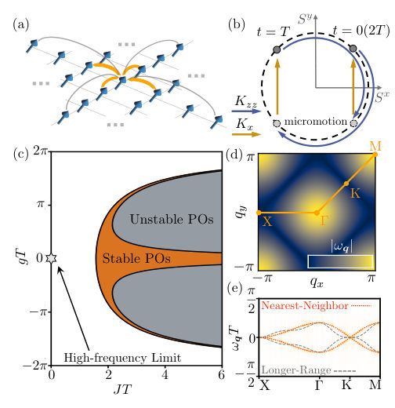
<figcaption class="paper-figure-caption"><b>Fig 1.</b> FIG. 1. (a) Schematic of a 2D driven Ising model with nearest-neighbor (orange) and further-range (gray) interac- tions. (b) Spin dynamics projected on the x −y plane fol- lows a periodic orbit (PO), where the Ising interaction effec- tively echoes out the transverse field. (c) Stability diagram of the POs in parameter space. SPOs exist in the orange re- gion that is away from the high-frequency limit (star). (d) Dispersion of the quasiparticles on top of SPOs. The spec- trum is gapless, and closes along the dark blue diamond (in- cluding the X and K points). (e) Dispersion ωq along the path X −Γ −M. Numerical results (orange) match analytical predictions (red dotted). Further-range...</figcaption>
</figure>
<figure class="paper-figure-card">
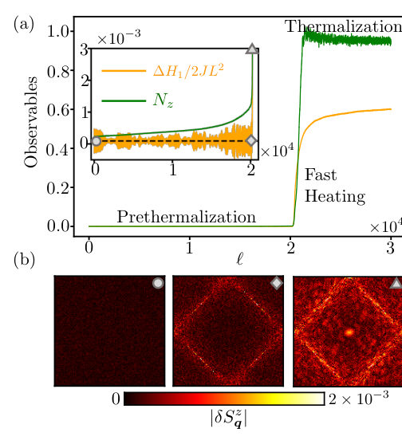
<figcaption class="paper-figure-caption"><b>Fig 2.</b> FIG. 2. (a) Dynamics of total occupation number Nz = P</figcaption>
</figure>
<figure class="paper-figure-card">
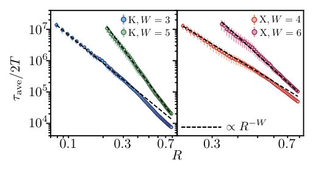
<figcaption class="paper-figure-caption"><b>Fig 3.</b> FIG. 3. Prethermal lifetime τave versus initial distribution width R for engineered band structures with W = 3, 4, 5, 6. The numerical results match well with the theoretical scaling R−W , plotted as a black dashed line as a guide to the eye. 100 independent realizations are used for the average, and their standard deviation serves as the error bar. We use σ = 0.176 with J = 1, g = 1, T = 2, and L = 128 for the simulations.</figcaption>
</figure>
<figure class="paper-figure-card">
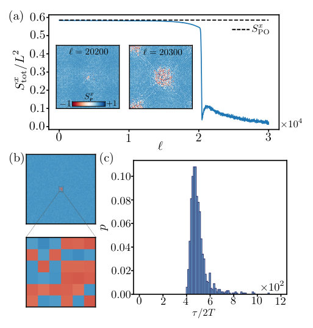
<figcaption class="paper-figure-caption"><b>Fig 4.</b> FIG. 4. (a) Dynamics of the total magnetization in the x di- rection, which continuously decreases during prethermaliza- tion. The insets are snapshots of configurations of Sx r, where a locally unstable region appears with flipped Sx r (red). This region quickly expands and triggers fast heating. (b) The initial state where the signs of Sx r within a 6 × 6 square re- gion are randomly chosen. (c) Distribution of the prether- mal lifetime from the initial states in (b). The local flip sig- nificantly shortens the prethermal lifetime, from O(104) to O(102). 1000 independent realizations are used to sample the distribution. Numerical simulations are performed using J = 1, g = 0.5, T = 2, L =...</figcaption>
</figure>
</div>

<p><strong>Summary.</strong> The authors investigate how periodically driven spin systems exhibit long-lived prethermalization before full thermalization. They show that by carefully engineering the system's emergent quasiparticle band structure using further-range interactions, they can achieve a 'doubly tunable' control over the prethermal lifetime. This work establishes a powerful theoretical tool for stabilizing non-equilibrium quantum states.</p>
<p><strong>Why it may be interesting.</strong> This work provides a concrete mechanism—band structure engineering—to stabilize non-equilibrium quantum phases in driven systems, bridging concepts from classical nonlinear dynamics (periodic orbits) to many-body chaos.</p>
<details>
<summary>Detailed structure</summary>
<p><strong>Main problem.</strong> The paper addresses the conflict between linear stability analysis, which suggests trajectories remain near stable periodic orbits (SPOs), and thermodynamic principles, which predict eventual Floquet heating in periodically driven many-body systems.</p>
<p><strong>Main result.</strong> They demonstrate that a long-lived prethermal regime exists, whose lifetime can be controlled by engineering the emergent quasiparticle band structure to achieve a 'doubly tunable' parametric dependence ($  au_{    ext{pre}} \propto R^{-W}$).</p>
<p><strong>Method.</strong> The analysis involves linearizing dynamics around SPOs to obtain an effective quasiparticle band structure and then deriving the scaling of the prethermal lifetime by analyzing time-averaged excitation rate equations.</p>
<p><strong>Model / system.</strong> The study uses a periodically driven (Floquet) spin system, specifically modeled as a 2D classical Ising system on a square lattice with nearest-neighbor and further-range couplings. The dynamics are governed by the periodicity $H(t) = H(t+T)$.</p>
<p><strong>Key observables.</strong> Prethermal lifetime ($ au_{    ext{pre}}$), quasiparticle momentum space width ($R$), and the dispersion exponent ($W$).</p>
<p><strong>Important parameters / regimes.</strong> The driving period $T$, coupling constants ($J, g$), and the engineered coefficients ($c_m$) that determine the band structure.</p>
<p><strong>Assumptions / limitations.</strong> Key assumptions include describing perturbations via an effective quasiparticle band structure and assuming the quasiparticle distribution remains close to its initial Gaussian form for the scaling derivation.</p>
<p><strong>Figures summary.</strong> Figures illustrate spin dynamics following SPOs, stability diagrams showing stable regions away from high-frequency limits, and plots comparing initial versus time-evolved quasiparticle momentum distributions at varying exponents $W$.</p>
<p><strong>Paper structure.</strong> The paper first establishes the physical model and the tension between linear stability and heating. It then uses PO construction and linear analysis to find a gapless dispersion relation. Finally, it derives the scaling law $ au \propto R^{-W}$ by analyzing excitation rates and shows how further-range interactions allow for engineering $W$.</p>
</details>
<details>
<summary>Abstract</summary>
<p>We uncover a family of many-body periodic orbits in a periodically driven (Floquet) spin system away from the high-frequency limit. While linear stability analysis predicts that perturbed many-body trajectories remain close to stable periodic orbits, thermodynamic principles dictate that Floquet heating will ultimately set in. Our work aims to resolve the tension between these two expectations. In particular, we show that perturbations away from the stable periodic orbits feature a description akin to a quasiparticle band structure. A long-lived prethermal regime appears when modes around the gapless point are slowly populated. The dispersion determines the prethermal lifetime, and we show how band engineering leads to a "doubly tunable" parametric dependence of the prethermal lifetime $R^{-W}$, with $R$ the width in momentum space of the quasiparticle distribution and $W$ the exponent of the dispersion around the gapless point. Our results not only establish a powerful route toward stabilizing non-equilibrium phases of matter in driven many-body systems but also establish a conceptual bridge between periodic orbits in 'low-dimensional' nonlinear systems and many-body chaos.</p>
</details>
<p><sub><a href="#top">↑ back to top</a></sub></p>

<p><a id="paper-2607.12047"></a></p>
<h3 id="observation-of-gravity-like-signatures-in-holographic-codes-on-a-quantum-computer">⭐ <a href="http://arxiv.org/abs/2607.12047v1">Observation of gravity-like signatures in holographic codes on a quantum computer</a></h3>
<p><strong>Highlighted author(s):</strong> John Preskill<br>
<strong>Authors:</strong> Debopriyo Biswas, Gong Cheng, Krishnanand Karthikeyan, Diana Muñoz-Valencia, Vincent P. Su, Hrant Gharibyan, Daiwei Zhu, Grant Salton, Evgeny Epifanovsky, Martin Roetteler, Christopher Monroe, John Preskill, Norbert M. Linke, ChunJun Cao, Crystal Noel<br>
<strong>Type:</strong> both · <strong>Category:</strong> other · <strong>PDF:</strong> <a href="https://arxiv.org/pdf/2607.12047v1">https://arxiv.org/pdf/2607.12047v1</a><br>
<strong>Analysis basis:</strong> full PDF text, analyzed in chunks
<strong>Topic relevance:</strong> 🔥 <code>entanglement &amp; information structure</code> <strong>5/5</strong> · 🔥 <code>QC/QI experiment</code> <strong>4/5</strong> · 🔥 <code>analog quantum simulation</code> <strong>4/5</strong> · <code>methods for driven-dissipative</code> <strong>3/5</strong> · <code>correlated / nonlocal dissipation</code> <strong>2/5</strong> · <code>driven-dissipative phase transition</code> <strong>2/5</strong> · <code>non-equilibrium dynamics</code> <strong>2/5</strong> · <code>Rydberg arrays</code> <strong>1/5</strong> · <code>correlated cavity matter</code> <strong>1/5</strong> · <code>non-equilibrium universality</code> <strong>1/5</strong></p>
<div class="figure-strip-hint">↔ Scroll figures horizontally</div>
<div class="paper-figures-scroll">
<figure class="paper-figure-card">
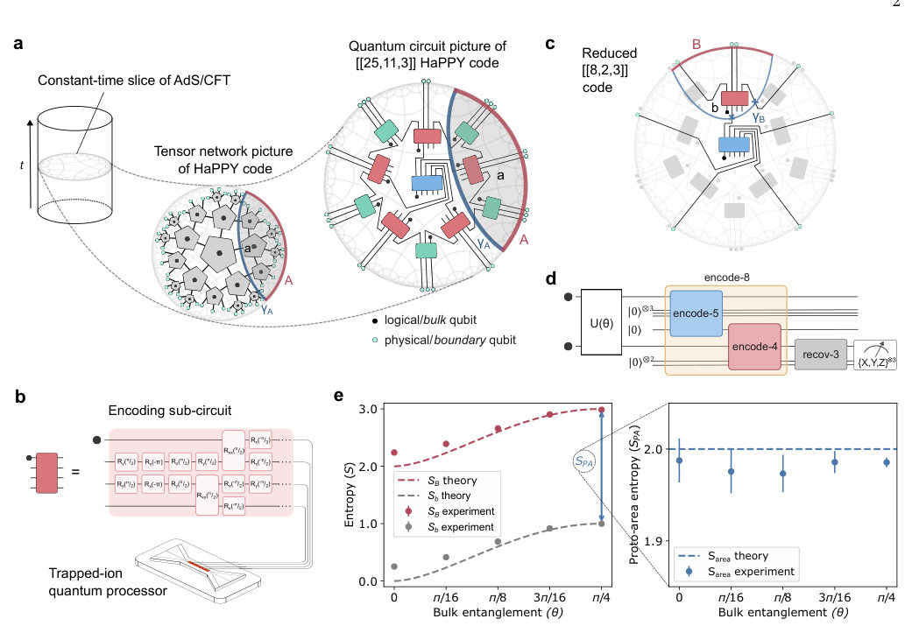
<figcaption class="paper-figure-caption"><b>Fig 1.</b> FIG. 1: Experimental realization of a holographic quantum error correcting code and FLM formula test. a: A hyperbolic time slice of AdS is tessellated by perfect tensors and compiled into a quantum circuit, with the encoding blocks running radially outward to the boundary. Blue, red, and green rectangles are the three distinct encoding sub-circuits (Appendix A); black and cyan dots are the logical (bulk) and physical (boundary) qubits respectively, and the remaining inputs are initialized to |0⟩. A is an example boundary subregion and γA is the minimal-area surface homologous to it. b: Decomposition of an encoding block into {Rx, Ry, Rz, RXX} gates for the trapped-ion processor (Appendix A...</figcaption>
</figure>
<figure class="paper-figure-card">
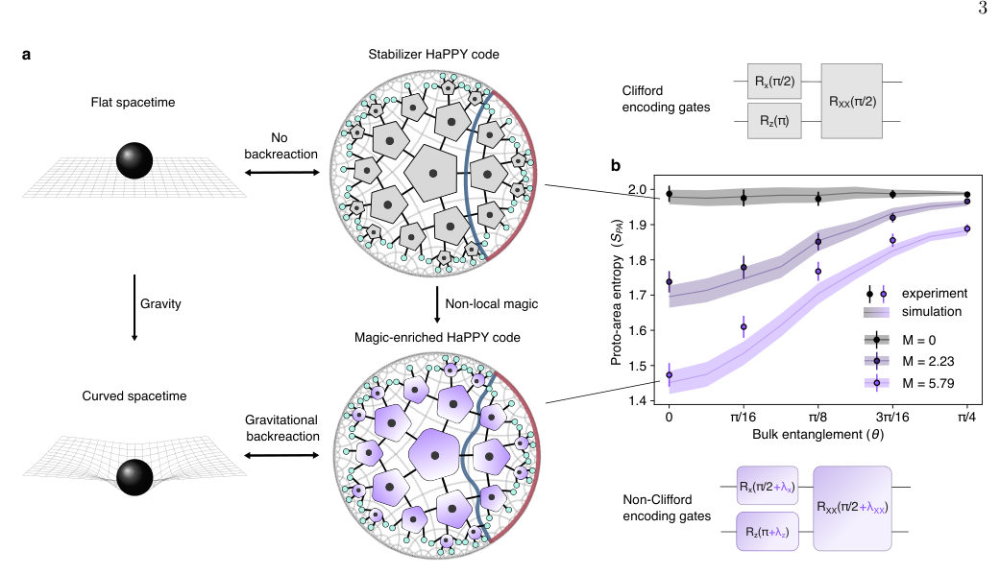
<figcaption class="paper-figure-caption"><b>Fig 2.</b> FIG. 2: Magic-enriched holographic codes and gravitational precursor. a: Conceptual and gate-level schematic of (top) an exact stabilizer HaPPY code and (bottom) a magic-enriched HaPPY code. The former is constructed from Clifford encoding gates and realizes a fixed tensor-network geometry, analogous to a rigid background with no gravitational backreaction. Introducing controlled coherent over-rotations λi to the encoding gates adds magic (non-stabilizerness) to the latter code, producing a state-dependent proto-area entropy, analogous to gravitational backreactions shifting the underlying geometry. b: Proto-area entropy SPA measured as a function of the bulk entanglement angle θ for three...</figcaption>
</figure>
<figure class="paper-figure-card">
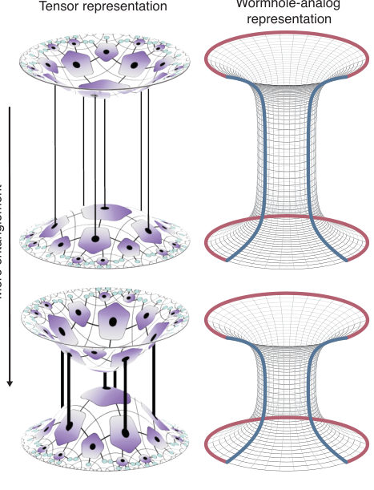
<figcaption class="paper-figure-caption"><b>Fig 3.</b> FIG. 3: Entanglement-induced connectivity. Two magic-enriched HaPPY-code tensor networks are coupled through entanglement between corresponding logical degrees of freedom (top left). In the wormhole analogy (top right), boundary-anchored geodesics, shown in blue, pass through the neck connecting the two sides. (Bottom) increasing the inter-code entanglement decreases the effective wormhole length, thereby shortening this candidate geodesic and reducing the geometric contribution to the entropy in sufficiently short wormholes in holography. Red curves denote the boundary subregions.</figcaption>
</figure>
<figure class="paper-figure-card">
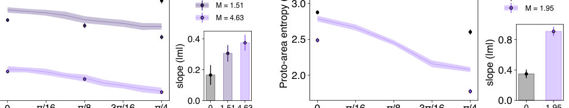
<figcaption class="paper-figure-caption"><b>Fig 4.</b> FIG. 4: Double-sided experiments from entangled holographic codes. a,b: Tensor-network diagrams for the two-code wormhole analogue. The 10-qubit experiment entangles two [[5, 1, 3]] codes using their logical qubits, while the 16-qubit experiment extends to entangling two [[8, 2, 3]] codes using two pairs of logical qubits. c,d: Corresponding experimental circuits used to extract boundary and bulk entropies. e,f: Measured proto-area entropy SPA as a function of the bulk entanglement angle θ for the 10-qubit and 16-qubit experiments. Experimental data are compared with numerical simulations. The 10-qubit data were acquired with 1250–1500 shots per Pauli basis, and the 16-qubit data were...</figcaption>
</figure>
<figure class="paper-figure-card">
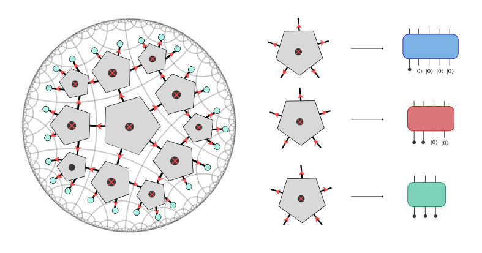
<figcaption class="paper-figure-caption"><b>Fig 5.</b> FIG. 6: Circuit representations of the local tensor isometries. A 6-leg perfect tensor can be interpreted as different encoding maps depending on the choice of input and output legs. The three choices used in constructing the two-layer HaPPY encoding circuit are shown: the [[5, 1, 3]] seed code, the [[4, 2, 2]] seed code, and the [[3, 3, 1]] unitary block. Black dots denote logical input legs, while legs initialized in |0⟩denote ancilla inputs.</figcaption>
</figure>
</div>

<p><strong>Summary.</strong> The research uses trapped-ion quantum computers to experimentally model the AdS/CFT correspondence via holographic error-correcting codes. By measuring entanglement entropy, they first verified a key formula relating entanglement to area (FLM) and then showed that introducing non-stabilizer resources generates state-dependent signatures predicted by theories of emergent gravity. This work establishes quantum computation as a novel platform for testing fundamental physics conjectures.</p>
<p><strong>Why it may be interesting.</strong> This work directly bridges quantum computation hardware (trapped ions) with fundamental physics problems (quantum gravity), providing an experimental testbed for concepts like holographic duality and emergent spacetime geometry that are highly relevant to AMO physicists studying complex many-body dynamics.</p>
<details>
<summary>Detailed structure</summary>
<p><strong>Main problem.</strong> The central problem is unifying quantum mechanics and general relativity by investigating whether spacetime geometry emerges from fundamental quantum entanglement degrees of freedom.</p>
<p><strong>Main result.</strong> The authors experimentally confirmed the Faulkner-Lewkowycz-Maldacena formula using a holographic code model, and further demonstrated that introducing non-stabilizer resources leads to state-dependent entropy signatures analogous to gravitational backreaction.</p>
<p><strong>Method.</strong> They implemented toy models of AdS/CFT duality (holographic codes) on a trapped-ion quantum computer, measuring entanglement entropies to calculate 'proto-area entropy' ($ ext{SPA}$).</p>
<p><strong>Model / system.</strong> The system uses the HaPPY code, a tensor network realizing a quantum error-correcting code, implemented on a trapped-ion platform. The model is extended by injecting non-stabilizer resources ('magic') to simulate gravitational backreaction effects.</p>
<p><strong>Key observables.</strong> Proto-area entropy ($  ext{SPA}$), boundary entanglement entropy ($S_A$), recovered bulk entropy ($S_a$), and the dependence of $   ext{SPA}$ on bulk entanglement ($   heta$).</p>
<p><strong>Important parameters / regimes.</strong> The entangling angle ($ heta$) controlling bulk entanglement, and the magic parameter ($M$) quantifying non-stabilizerness.</p>
<p><strong>Assumptions / limitations.</strong> The observed effects are interpreted as modeling emergent spacetime geometry, but the authors caution that this is a toy model and not a literal probe of semi-classical gravity.</p>
<p><strong>Figures summary.</strong> Figures illustrate the HaPPY code structure, compare measured $    ext{SPA}$ vs. theory predictions for FLM testing, and show how increasing bulk entanglement ($  heta$) causes $ ext{SPA}$ to change when magic resources are added.</p>
<p><strong>Paper structure.</strong> The paper proceeds by first establishing the experimental realization of the holographic duality test (FLM formula). It then enriches the model with non-stabilizerness ('magic') to observe state-dependent signatures, culminating in analogies involving wormhole geometries and two-sided entanglement structures.</p>
</details>
<details>
<summary>Abstract</summary>
<p>The unification of quantum mechanics and general relativity remains one of the major open problems of theoretical physics. The Anti-de Sitter/Conformal Field Theory (AdS/CFT) correspondence provides a valuable theoretical framework for this effort via a holographic duality between a theory of quantum gravity in asymptotically AdS spacetime and a conformal quantum field theory on the lower-dimensional boundary. Here, we implement a toy model of this duality called the HaPPY code, a quantum error-correcting code in the form of a tensor network with hyperbolic entanglement patterns, on a trapped-ion quantum computer. We present the first experimental confirmation of the Faulkner-Lewkowycz-Maldacena formula in this model - a key test of the holographic correspondence. We then enrich it with non-stabilizerness, or magic, and observe entropic precursors expected of emergent gravity. Finally, we present and measure a code construction whose entropic behavior is reminiscent of a highly quantum wormhole. Our experiments illustrate how quantum computers can serve as testbeds for modeling the emergence of spacetime.</p>
</details>
<p><sub><a href="#top">↑ back to top</a></sub></p>

<p><a id="paper-2607.12665"></a></p>
<h3 id="collective-state-preparation-in-a-subwavelength-triangular-trimer-using-super-excitation">⭐ <a href="http://arxiv.org/abs/2607.12665v1">Collective-State Preparation in a Subwavelength Triangular Trimer Using SUPER Excitation</a></h3>
<p><strong>Highlighted author(s):</strong> Helmut Ritsch<br>
<strong>Authors:</strong> Thomas Nunner, Johannes Kerber, Helmut Ritsch, Arpita Pal<br>
<strong>Type:</strong> theory · <strong>Category:</strong> other · <strong>PDF:</strong> <a href="https://arxiv.org/pdf/2607.12665v1">https://arxiv.org/pdf/2607.12665v1</a><br>
<strong>Analysis basis:</strong> full PDF text, analyzed in chunks
<strong>Topic relevance:</strong> 🔥 <code>correlated / nonlocal dissipation</code> <strong>4/5</strong> · 🔥 <code>methods for driven-dissipative</code> <strong>4/5</strong> · <code>Dicke superradiance</code> <strong>3/5</strong> · <code>Tavis-Cummings &amp; cavity-many-emitter</code> <strong>3/5</strong> · <code>correlated cavity matter</code> <strong>3/5</strong> · <code>analog quantum simulation</code> <strong>2/5</strong> · <code>driven-dissipative phase transition</code> <strong>2/5</strong> · <code>non-equilibrium dynamics</code> <strong>2/5</strong> · <code>superradiant laser</code> <strong>2/5</strong> · <code>Keldysh / 2PI / non-Gaussian methods</code> <strong>1/5</strong> · <code>entanglement &amp; information structure</code> <strong>1/5</strong> · <code>exotic spin models in light-matter</code> <strong>1/5</strong> · <code>free-space correlated emission</code> <strong>1/5</strong> · <code>interference shaping light</code> <strong>1/5</strong> · <code>non-equilibrium universality</code> <strong>1/5</strong> · <code>quantum measurements</code> <strong>1/5</strong></p>
<div class="figure-strip-hint">↔ Scroll figures horizontally</div>
<div class="paper-figures-scroll">
<figure class="paper-figure-card">
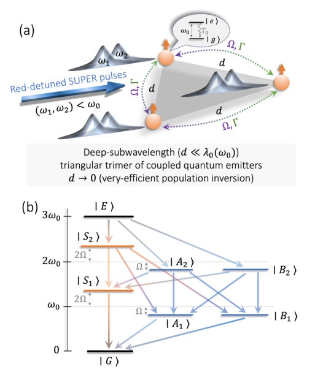
<figcaption class="paper-figure-caption"><b>Fig 1.</b> FIG. 1. (a) Schematic of an equilateral triangular arrange- ment of three two-level QEs separated by a distance d and driven by parameter-optimized sets of SUPER pulses. Each QE has a ground state |g⟩and an excited state |e⟩, with tran- sition frequency ω0 (corresponding resonant transition wave- length is λ0) and spontaneous emission rate Γ0. The SU- PER pulses are red-detuned with frequencies (ω1, ω2) &lt; ω0. Dipole-dipole interactions between the QEs induce collective energy shifts Ωand decay rates Γ depending on the inter- emitter separation and the dipole orientations (see text). (b) Possible decay channels for the dipole-coupled equilateral tri- angular trimer. Downward arrows indicate...</figcaption>
</figure>
<figure class="paper-figure-card">
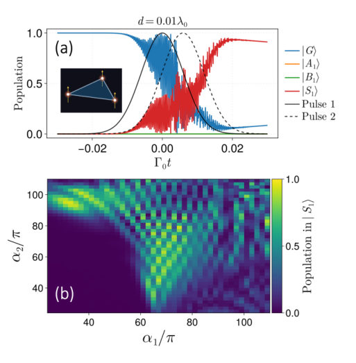
<figcaption class="paper-figure-caption"><b>Fig 2.</b> FIG. 2. Near-unity population inversion into the symmet- ric collective state |S1⟩at deep-subwavelength QE separa- tion d = 0.01λ0 for transversely oriented dipoles (see in- set). Panel (a) shows the time evolution of state populations under the SUPER excitation, with optimized pulse parame- ters (∆1, ∆2) = (−3.00, −12.75) meV, (α1, α2) = (33π, 95π), (σ1, σ2) = (6, 6) ps, ϑi = 0 (i = 1, 2, 3), and τ = 5.9 ps, for transversely oriented dipoles at nearest-neighbor separation d = 0.01λ0. A final population of 94.3% (approximately) is achieved in the symmetric state |S1⟩. The two pulse normal- ized envelopes are shown as black solid and dashed curves. Panel (b) shows the corresponding heatmap...</figcaption>
</figure>
<figure class="paper-figure-card">
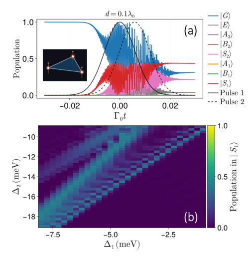
<figcaption class="paper-figure-caption"><b>Fig 3.</b> FIG. 3. Reduced selective collective-state preparation at larger inter-emitter separation d = 0.1λ0 for transversely ori- ented dipoles (see inset). Panel (a) shows the time evolu- tion of state populations under SUPER excitation for trans- versely oriented dipoles at inter-emitter separation d = 0.1λ0, with pulse parameters (α1, α2) = (33π, 95π), τ = 5.9 ps, (∆1, ∆2) = (−3.25, −12.50) meV, (σ1, σ2) = (6, 6) ps, and ϑi = 0 (i = 1, 2, 3). The maximum achievable population in |S1⟩is approximately 44%, with residual population dis- tributed among several other states as indicated. Panel (b) shows the corresponding heatmap of the final |S1⟩population as a function of detuning (∆1, ∆2), with all...</figcaption>
</figure>
<figure class="paper-figure-card">
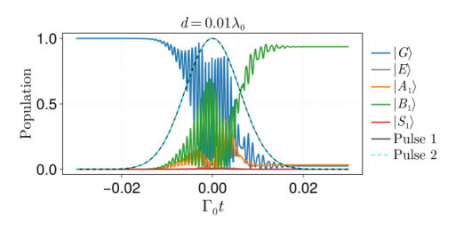
<figcaption class="paper-figure-caption"><b>Fig 4.</b> FIG. 4. Inversions in the antisymmetric collective state |B1⟩, when dipoles are transversely oriented to the plane of the tri- angle. The inversion is approximately 93.7% to state |B1⟩ with SUPER pulses, having pulse parameters as follows: (α1, α2) = (28π, 12π), τ = 0 ps, (∆1, ∆2) = (−5.4, −10.6) meV, (σ1, σ2) = (6, 6) ps. In this case we need to set optical phases as follows: ϑ1 = 1.8π, ϑ2 = 0.2π and ϑ3 = 0.9π.</figcaption>
</figure>
</div>

<p><strong>Summary.</strong> The paper demonstrates a method using SUPER excitation pulses to deterministically prepare specific collective quantum states in a triangular array of three coupled quantum emitters. The efficiency is critically dependent on the emitter spacing, showing near-perfect control only when the emitters are placed at deep-subwavelength separations. This work suggests that highly compact nanostructures are excellent platforms for controlling collective quantum phenomena.</p>
<p><strong>Why it may be interesting.</strong> This work directly addresses quantum control in engineered nanoscale light-matter interactions, providing concrete theoretical predictions for achieving high-fidelity collective state preparation relevant to solid-state emitters and bio-inspired photonics.</p>
<details>
<summary>Detailed structure</summary>
<p><strong>Main problem.</strong> The goal is the deterministic preparation of specific collective radiative states within a nanoscale array of quantum emitters.</p>
<p><strong>Main result.</strong> Near-unity efficiency for preparing the symmetric collective state is achieved when the emitter spacing is deep-subwavelength, demonstrating that compact geometries are highly favorable for this control scheme.</p>
<p><strong>Method.</strong> The study uses numerical simulation solving the Lindblad master equation under the influence of tailored, time-overlapping, red-detuned ultrashort excitation pulses (SUPER).</p>
<p><strong>Model / system.</strong> The system is modeled as an equilateral triangular trimer of three dipole-coupled two-level quantum emitters, inspired by biological light-harvesting structures. The dynamics are governed by the full Hamiltonian and a Lindblad master equation.</p>
<p><strong>Key observables.</strong> State selectivity, preparation efficiency (population inversion) into specific collective states like $|S_1\rangle$.</p>
<p><strong>Important parameters / regimes.</strong> Inter-emitter spacing ($d$), which is critical; deep-subwavelength separations ($d \ll 0.01\lambda_0$) are optimal.</p>
<p><strong>Assumptions / limitations.</strong> The model relies on the coupled-dipole approximation and assumes weak system-environment interaction, though robustness against minor disorder is shown.</p>
<p><strong>Figures summary.</strong> Figures illustrate the time evolution of population inversion into the symmetric state $|S_1\rangle$, showing high fidelity at small separations ($d = 0.01\lambda_0$) compared to significantly lower efficiency at larger separations ($d = 0.1\lambda_0$).</p>
<p><strong>Paper structure.</strong> The paper extends the SUPER excitation scheme from two emitters to a trimer, numerically investigating how state selectivity and preparation efficiency depend on inter-emitter spacing by solving the master equation with tailored pulses.</p>
</details>
<details>
<summary>Abstract</summary>
<p>The Swing-UP of quantum EmitteR population (SUPER) scheme has recently been proposed as a deterministic method for the preparation of collective radiative states in two strongly dipole-coupled quantum emitters (Phys. Rev. Res. \textbf{8}, 013179 (2026)). Here, we extend this approach to an equilateral subwavelength triangular trimer of dipole-coupled two-level quantum emitters (QEs), loosely inspired by biological light-harvesting ring geometries. Using tailored, time-overlapping, red-detuned ultrashort SUPER pulses, we numerically investigate the selective preparation of collective target states. We find that both the state selectivity and the preparation efficiency depend strongly on the inter-emitter spacing. In particular, at deep-subwavelength separations, the symmetric collective state can be deterministically prepared with near-unity efficiency, whereas the inversion efficiency and state selectivity are significantly lower at larger inter-emitter separations. Furthermore, this state preparation technique inherits a certain degree of robustness against reasonable static position imperfections and on-site frequency inhomogeneities of the individual QEs. Our results demonstrate that deep-subwavelength triangular trimers and, more broadly, highly compact ring geometries are excellent candidates for the deterministic preparation of collective radiative states via SUPER excitation. These predictions could be realized with solid-state emitters and molecules. Our findings offer a route toward the direct probing of the `pure' electromagnetic layer of interaction in biological and bio-inspired synthetic nanophotonic ring configurations, with possible relevance in photonics, quantum information processing, and metrology.</p>
</details>
<p><sub><a href="#top">↑ back to top</a></sub></p>

<p><a id="paper-2607.12988"></a></p>
<h3 id="a-cryogenic-neutral-atom-platform-with-full-optical-access-and-2-hour-trap-lifetime">⭐ <a href="http://arxiv.org/abs/2607.12988v1">A cryogenic neutral-atom platform with full optical access and 2-hour trap lifetime</a></h3>
<p><strong>Highlighted author(s):</strong> Immanuel Bloch<br>
<strong>Authors:</strong> Akhil Kumar, Lorenzo Festa, Avishay Grinberg, Eran Reches, Dimitrios Tsevas, Kevin P. Mours, Zhao Zhang, Robin Eberhard, Sebastian Blatt, Andrea Alberti, Johannes Zeiher, Immanuel Bloch, Max Melchner<br>
<strong>Type:</strong> experiment · <strong>Category:</strong> other · <strong>PDF:</strong> <a href="https://arxiv.org/pdf/2607.12988v1">https://arxiv.org/pdf/2607.12988v1</a><br>
<strong>Analysis basis:</strong> full PDF text, analyzed in chunks
<strong>Topic relevance:</strong> 🔥 <code>analog quantum simulation</code> <strong>4/5</strong> · <code>QC/QI experiment</code> <strong>3/5</strong> · <code>Rydberg arrays</code> <strong>1/5</strong> · <code>non-equilibrium dynamics</code> <strong>1/5</strong></p>
<div class="figure-strip-hint">↔ Scroll figures horizontally</div>
<div class="paper-figures-scroll">
<figure class="paper-figure-card">
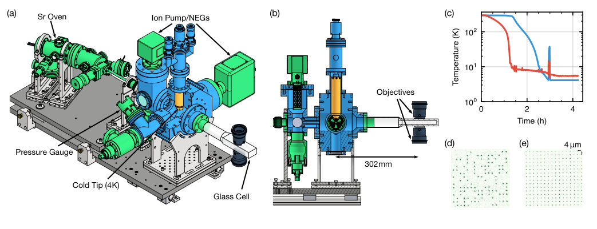
<figcaption class="paper-figure-caption"><b>Fig 1.</b> FIG. 1. Render of the vacuum chamber. (a) The vacuum chamber consists of a strontium oven, a chamber made predominantly of grade 2 titanium, a glass cell, and a cryostat that cools a cold tip in vacuum to 4 K. The components are colored according to the material of the vacuum-facing surfaces. Titanium, stainless steel, and copper surfaces are colored in blue, green, and orange, respectively. Atoms are trapped in optical tweezers in a fused silica glass cell. The objectives used to focus the tweezers into the vacuum chamber and collect fluorescence for tweezer-resolved imaging are shown in black. (b) Cross section of the right part of the chamber. The cold tip is located roughly 30 cm away...</figcaption>
</figure>
<figure class="paper-figure-card">
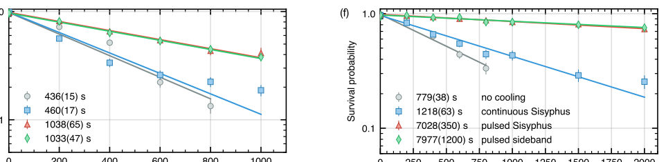
<figcaption class="paper-figure-caption"><b>Fig 2.</b> FIG. 2. Lifetime measurements in the cryogenic apparatus. (a) A schematic of our experimental sequence. Following state preparation and initial imaging, single atoms are held in optical tweezers for a variable duration (the “hold time”). During this hold time, we apply either continuous Sisyphus cooling (b), pulsed Sisyphus cooling (c), or pulsed sideband cooling (d) and measure the corresponding atomic lifetime. Continuous Sisyphus cooling is maintained throughout the entire hold period. For pulsed Sisyphus cooling, we apply individual cooling pulses every 15 s for a duration of 65 ms. Our pulsed sideband cooling protocol consists of alternating pulses of radial and axial sideband cooling...</figcaption>
</figure>
<figure class="paper-figure-card">
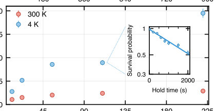
<figcaption class="paper-figure-caption"><b>Fig 3.</b> FIG. 3. Measuring lifetime as a function of tweezer depth. (a) Experimental sequence for measuring the trapped-atom lifetime at different tweezer powers. After the initial fluores- cence image, the tweezer depth is linearly ramped down to a target trap depth in 5 ms. The trap depth is ramped up to 100 % for each Sisyphus cooling pulse; the trap depth is thus higher than the target value for a total duration equal to 0.5 % of the hold time. Measurements are performed in both cryogenic and non-cryogenic environments. (b) Lifetime vs tweezer trap depth with cryopumping enabled (blue) and disabled (red). Each lifetime value is extracted from a fit to an exponential decay of the atom survival vs...</figcaption>
</figure>
<figure class="paper-figure-card">
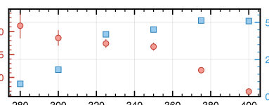
<figcaption class="paper-figure-caption"><b>Fig 4.</b> FIG. 4. Measuring lifetime as a function of oven temperature. We observe a pronounced dependence of the trapped-atom lifetime on the oven temperature, with lower oven tempera- tures consistently leading to longer trapping lifetimes. This behavior is attributed to the reduced outgassing of hydrogen from the oven and, correspondingly, a lower background col- lision rate at lower oven temperatures. At the same time, de- creasing the oven temperature also reduces the atom loading rate into the tweezers, reflecting the trade-off between load- ing efficiency and vacuum-limited lifetime. Measurements use a blue MOT loading time of 800 ms and a tweezer depth of 220 µK. Lower loading rates can be...</figcaption>
</figure>
<figure class="paper-figure-card">
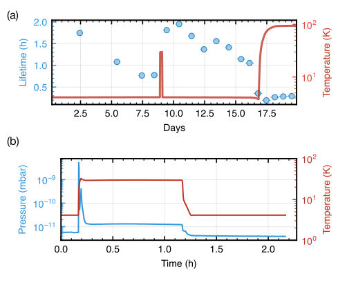
<figcaption class="paper-figure-caption"><b>Fig 5.</b> FIG. 5. Regenerating the cold tip. (a) The lifetime is con- tinuously monitored over 16 days by running the lifetime se- quence described in the main text. Around day 9, the cold tip was regenerated by heating it up for a few hours. Around day 17, the temperature gradually increased to 100 K. As the temperature increases, hydrogen desorbs from the cryo- genic surface at a higher rate and the lifetime decreases sig- nificantly. The lifetime recovers after a few hours, indicating the hydrogen released during the heat-up of the cold tip has been removed by other parts of the vacuum system (e.g., get- ters/ion pumps). After regenerating the cold tip, we measure an exponential decay of the...</figcaption>
</figure>
</div>

<p><strong>Summary.</strong> The research introduces a novel cryogenic neutral-atom trap system that successfully resolves the conflict between achieving long atomic storage times and maintaining full optical access. By implementing advanced vacuum pumping techniques, they achieved record lifetimes of two hours with single atoms in an optical tweezer array. This breakthrough paves a viable path for scaling up quantum simulation experiments using thousands of qubits.</p>
<p><strong>Why it may be interesting.</strong> This work directly addresses a critical engineering bottleneck in quantum simulation: maintaining high coherence times while enabling complex optical addressing schemes necessary for scaling up qubit numbers.</p>
<details>
<summary>Detailed structure</summary>
<p><strong>Main problem.</strong> Current neutral-atom quantum platforms face a fundamental trade-off between maintaining full optical accessibility for control and achieving long atomic storage times in optical potentials.</p>
<p><strong>Main result.</strong> The authors report a novel cryogenic apparatus that overcomes this trade-off, demonstrating vacuum-limited single-atom trapping lifetimes of up to two hours while retaining full optical access.</p>
<p><strong>Method.</strong> They utilized a cryogenically enhanced neutral-atom trap system with an optical tweezer array and employed rigorous vacuum techniques, including cold tips and bakeouts, to minimize gas-phase decoherence.</p>
<p><strong>Model / system.</strong> The platform uses single $^{88}	ext{Sr}$ atoms trapped in optical tweezers within a cryostat. The key components include the atomic source, the tweezer array, and a 4 K cold tip used for pumping residual gases like hydrogen.</p>
<p><strong>Key observables.</strong> Vacuum-limited trapping lifetimes ($   au$), survival probability vs. hold time, and dependence of lifetime on trap depth and oven temperature.</p>
<p><strong>Important parameters / regimes.</strong> Trapping lifetime up to two hours (&gt;7000 s); Tweezer spacing of $4\ \mu	ext{m}$; Cryogenic temperatures ($\sim 4$ K).</p>
<p><strong>Assumptions / limitations.</strong> The design does not shield atoms from room-temperature blackbody radiation, which is a noted limitation.</p>
<p><strong>Figures summary.</strong> Figures illustrate the vacuum chamber setup (Fig. 1), the experimental sequence for lifetime measurements using various cooling protocols (Fig. 2), and show how regeneration cycles restore long lifetimes after gas desorption events (Fig. 5).</p>
<p><strong>Paper structure.</strong> The paper details the physical apparatus, presents methods for measuring atomic decay rates under varying conditions (cooling/vacuum control), reports achieving record long lifetimes by mitigating vacuum limitations, and discusses scalability.</p>
</details>
<details>
<summary>Abstract</summary>
<p>Neutral-atom quantum processors are rapidly scaling toward system sizes of more than ten thousand qubits, allowing for the realization of a new class of quantum computing algorithms and quantum simulation experiments. However, current neutral-atom platforms generally have to find a compromise between the optical accessibility and the storage time of atoms in optical potentials, limiting the available qubit numbers. Here we report on the operation of a novel, cryogenically enhanced, neutral-atom apparatus that overcomes these apparently conflicting requirements. We demonstrate vacuum-limited trapping lifetimes of up to two hours of single $^{88}\mathrm{Sr}$ atoms in an optical tweezer array while preserving full optical access and without the need for complex cryogenic enclosures. Our measurements show that exceptionally long single-atom lifetimes can be achieved with a relatively simple cryostat design. Our architecture can be straightforwardly ported to other atomic species and shows a viable path for scaling up to sorted arrays of tens of thousands of atoms.</p>
</details>
<p><sub><a href="#top">↑ back to top</a></sub></p>

<p><a id="paper-2607.12386"></a></p>
<h3 id="measurement-induced-phase-transition-in-space"><a href="http://arxiv.org/abs/2607.12386v1">Measurement-induced phase transition in space</a></h3>
<p><strong>Authors:</strong> Jia-Qiang Li, Liang-Jun Zhai, Shuo Liu, Shuai Yin<br>
<strong>Type:</strong> theory · <strong>Category:</strong> statistical mechanics · <strong>PDF:</strong> <a href="https://arxiv.org/pdf/2607.12386v1">https://arxiv.org/pdf/2607.12386v1</a><br>
<strong>Analysis basis:</strong> full PDF text, analyzed in chunks
<strong>Topic relevance:</strong> 🔥 <code>measurement-induced transitions</code> <strong>5/5</strong> · 🔥 <code>entanglement &amp; information structure</code> <strong>4/5</strong> · 🔥 <code>non-equilibrium universality</code> <strong>4/5</strong> · <code>driven-dissipative phase transition</code> <strong>3/5</strong> · <code>methods for driven-dissipative</code> <strong>3/5</strong> · <code>analog quantum simulation</code> <strong>2/5</strong> · <code>correlated / nonlocal dissipation</code> <strong>2/5</strong> · <code>non-equilibrium dynamics</code> <strong>2/5</strong> · <code>quantum measurements</code> <strong>1/5</strong></p>
<div class="figure-strip-hint">↔ Scroll figures horizontally</div>
<div class="paper-figures-scroll">
<figure class="paper-figure-card">
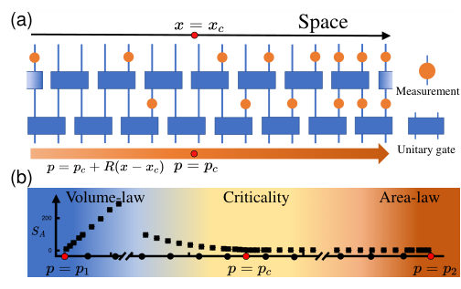
<figcaption class="paper-figure-caption"><b>Fig 1.</b> FIG. 1. Schematic of the monitored Clifford circuit and the spatial MIPT. (a) The circuit consists of brickwork layers of two-site random Clifford gates, represented by blue rectan- gles; each gate layer is followed by a layer of single-site projec- tive measurements, represented by orange circles. The mea- surement probability varies along the spatial direction accord- ing to the truncated linear profile p(x) = max{0, min{1, pc + R(x −xc)}}, illustrated by the gradient bar. (b) Entangle- ment structure generated by the spatial measurement profile. Within a single steady state, the chain contains volume-law, critical, and area-law regions. The point p(xc) = pc acts as a spatial critical...</figcaption>
</figure>
<figure class="paper-figure-card">
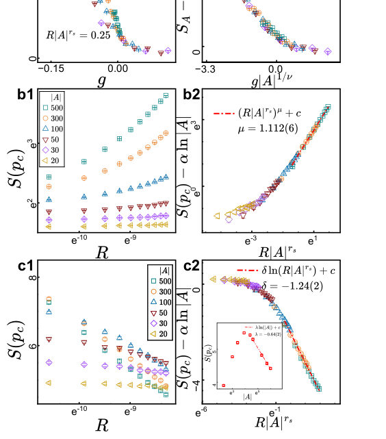
<figcaption class="paper-figure-caption"><b>Fig 2.</b> FIG. 3. Verification of the spatial scaling form in Eq. (4). For fixed R|A|rs = 0.25, panel (a1) shows the subsystem entropy SA as a function of g for different subsystem sizes |A|, while panel (a2) presents the corresponding collapse after subtract- ing the critical logarithmic contribution. Panels (b) and (c) examine the critical scaling of SA(pc). Panel (b1) plots SA(pc) versus R on the p &lt; pc side for different |A|, and panel (b2) shows the associated collapse. The red dashed line in panel (b2) is a power-law fit with exponent µ = 1.112(6). Panel (c1) shows SA(pc) versus R on the p &gt; pc side, and panel (c2) presents the corresponding collapse. The semi-logarithmic fit gives slope δ =...</figcaption>
</figure>
<figure class="paper-figure-card">
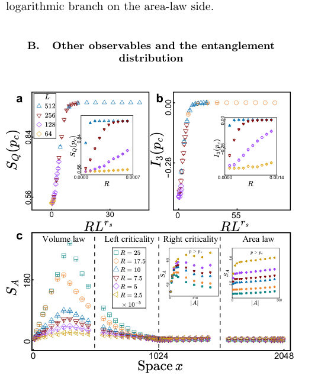
<figcaption class="paper-figure-caption"><b>Fig 3.</b> FIG. 4. Critical scaling of the ancilla entropy SQ and tripar- tite mutual information I3, together with the spatial entan- glement profile. Panels (a) and (b) show the rescaled collapses of SQ and I3, respectively; the insets show the corresponding unscaled critical data. Panel (c) shows the spatial coexis- tence of volume-law and area-law regions across the central critical point. The outer subpanels of (c) display the subsys- tem entanglement entropy far from pc for p &lt; pc and p &gt; pc, respectively, revealing the volume-law and area-law entangle- ment structures characteristic of the spatial MIPT.</figcaption>
</figure>
<figure class="paper-figure-card">
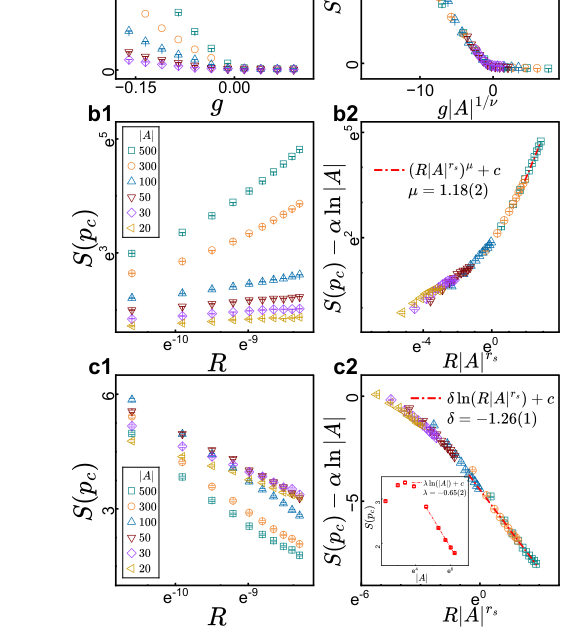
<figcaption class="paper-figure-caption"><b>Fig 4.</b> FIG. 6. Verification of the scaling form in the boundary- anchored protocol. For fixed R|A|rs = 0.5, panel (a1) shows the subsystem entropy SA as a function of g for different sub- system sizes |A|, while panel (a2) presents the corresponding rescaled data. Panels (b) and (c) examine the critical scaling for the setup in Fig. 5(b). Panel (b1) plots SA(pc) versus R for p(x) = pc −R(x −xc), and panel (b2) displays the associated collapse. The red dashed line in panel (b2) is a power-law fit with exponent µ = 1.18(2). Panel (c1) shows SA(pc) ver- sus R for p(x) = pc + R(x −xc), and panel (c2) presents the corresponding collapse. The semi-logarithmic fit gives slope δ = −1.26(1). The inset in...</figcaption>
</figure>
<figure class="paper-figure-card">
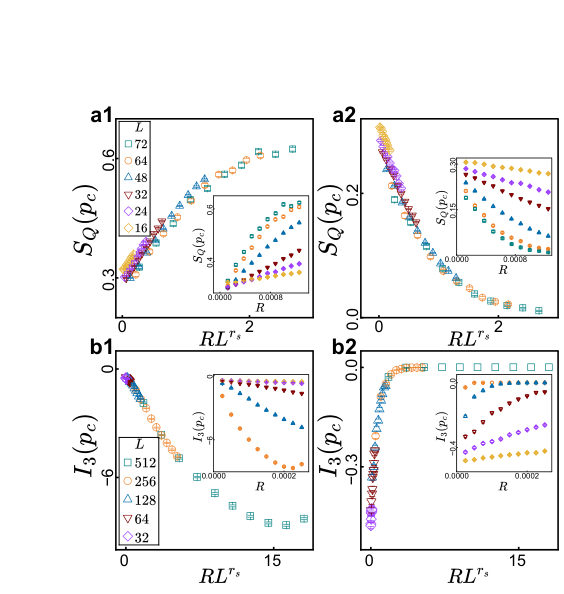
<figcaption class="paper-figure-caption"><b>Fig 5.</b> FIG. 7. Critical ancilla entropy SQ and tripartite mutual information I3 in the boundary-anchored protocol. Panels (a1) and (a2) show SQ, while panels (b1) and (b2) show I3. The left and right panels correspond to the volume-law and area-law sides, respectively. Insets show the unscaled critical data as functions of R for different system sizes L, and the main panels show the corresponding collapses as functions of RLrs.</figcaption>
</figure>
</div>

<p><strong>Summary.</strong> This work introduces a spatial realization of Measurement-induced Phase Transitions (MIPTs) in a monitored quantum circuit by imposing a linear gradient on the measurement probability. By analyzing entanglement scaling across this gradient, the authors show that the transition is governed by a specific scaling form. This method allows for the controlled probing and direct calculation of critical exponents within a single steady state.</p>
<p><strong>Why it may be interesting.</strong> It provides a novel, controlled method—spatial inhomogeneity—to engineer and probe measurement-induced criticality within a single steady state, offering insights into non-equilibrium critical phenomena.</p>
<details>
<summary>Detailed structure</summary>
<p><strong>Main problem.</strong> The paper investigates Measurement-induced Phase Transitions (MIPTs) by realizing the transition spatially rather than through uniform measurement probabilities or temporal driving.</p>
<p><strong>Main result.</strong> It establishes that a deterministic spatial gradient in measurement probability creates coexisting volume-, critical, and area-law regions within a single steady state, allowing for the direct extraction of the correlation-length exponent $\nu$.</p>
<p><strong>Method.</strong> The analysis involves scanning entanglement observables (like subsystem entropy) across the spatially varying measurement profile and performing scaling analyses.</p>
<p><strong>Model / system.</strong> The system is a monitored Clifford chain (1+1)D random circuit model where local projective measurements are performed after each gate layer, controlled by a linear gradient $p(x)$.</p>
<p><strong>Key observables.</strong> Subsystem entanglement entropy ($S_A$), ancilla entropy ($S_Q$), and tripartite mutual information ($I_3$).</p>
<p><strong>Important parameters / regimes.</strong> The critical measurement probability $p_c$, the spatial gradient parameter $R$, and the physical bounds $0 \le p(x) \le 1$.</p>
<p><strong>Assumptions / limitations.</strong> The analysis relies on truncating the linear gradient due to the physical constraints of probabilities ($0 \le p(x) \le 1$).</p>
<p><strong>Figures summary.</strong> Figure 1 schematically shows the circuit and the resulting entanglement structure (Volume-law $\leftarrow$ Criticality $\rightarrow$ Area-law). Figure 3 verifies data collapse for scaling forms on both volume-law and area-law sides.</p>
<p><strong>Paper structure.</strong> The paper introduces the spatial MIPT concept, analyzes the steady state containing coexisting regimes via entanglement observables, derives a spatial scaling form analogous to finite-time scaling but without Kibble-Zurek dynamics, and uses this structure to extract $\nu$ from the finite linear window.</p>
</details>
<details>
<summary>Abstract</summary>
<p>Measurement-induced phase transitions (MIPTs) in monitored quantum circuits are usually characterized by preparing steady states at different uniform measurement probabilities. Here we introduce a spatial realization of the MIPT by imposing a deterministic measurement gradient in a single monitored Clifford chain. The resulting steady state contains coexisting volume-law, critical, and area-law regions, with the point $p(x)=p_c$ acting as a spatial critical cut. By scanning entanglement observables across this profile, we show that the transition is organized by a spatial scaling form. Although this structure is analogous to finite-time scaling in temporally driven MIPT, the spatial protocol has no Kibble-Zurek dynamics. Instead, the physical bounds $0\le p\le 1$ impose a finite linear window, producing cutoff-controlled asymptotic regimes whose fitted exponents provide direct access to the correlation-length exponent $ν$. Our results establish spatially inhomogeneous measurements as a controlled route to engineer and probe measurement-induced criticality within a single steady state.</p>
</details>
<p><sub><a href="#top">↑ back to top</a></sub></p>

<p><a id="paper-2607.12999"></a></p>
<h3 id="spin-chain-quantum-communication-on-a-trapped-ion-processor"><a href="http://arxiv.org/abs/2607.12999v1">Spin Chain Quantum Communication on a Trapped-Ion Processor</a></h3>
<p><strong>Authors:</strong> Madhumita Sarkar, Trinity Pointon, Sougato Bose<br>
<strong>Type:</strong> experiment · <strong>Category:</strong> other · <strong>PDF:</strong> <a href="https://arxiv.org/pdf/2607.12999v1">https://arxiv.org/pdf/2607.12999v1</a><br>
<strong>Analysis basis:</strong> full PDF text, analyzed in chunks
<strong>Topic relevance:</strong> 🔥 <code>QC/QI experiment</code> <strong>5/5</strong> · 🔥 <code>analog quantum simulation</code> <strong>4/5</strong> · <code>entanglement &amp; information structure</code> <strong>2/5</strong> · <code>non-equilibrium dynamics</code> <strong>2/5</strong> · <code>exotic spin models in light-matter</code> <strong>1/5</strong></p>
<div class="figure-strip-hint">↔ Scroll figures horizontally</div>
<div class="paper-figures-scroll">
<figure class="paper-figure-card">
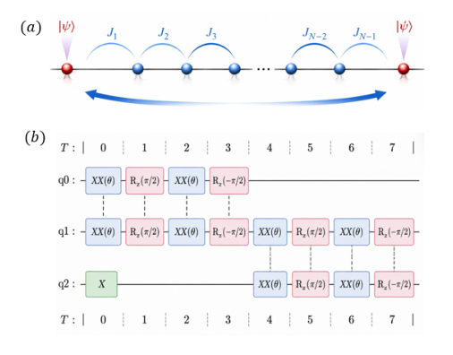
<figcaption class="paper-figure-caption"><b>Fig 1.</b> FIG. 1. (a) Schematic illustration of quantum state transfer in an engineered spin chain. A quantum state initially en- coded in the leftmost qubit, propagates coherently through the chain under the engineered nearest-neighbour couplings Ji and is reconstructed at the opposite end after the opti- mal transfer time. (b) Digital implementation of the corre- sponding nearest-neighbour XY Hamiltonian on the trapped- ion quantum processor. The continuous Hamiltonian evolu- tion is approximated using a first-order Trotter decomposi- tion, in which each Trotter step is realized through a sequence of experimentally accessible two-qubit interactions and single qubit rotations.</figcaption>
</figure>
<figure class="paper-figure-card">
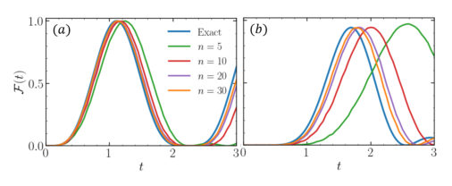
<figcaption class="paper-figure-caption"><b>Fig 2.</b> FIG. 2. Convergence of the gate-based Trotter approximation towards the exact NN dynamics with increasing numbers of Trotter steps for (a) N = 3, and (b) N = 5. As the number of Trotter steps increases, the gate-based evolution approaches the exact Hamiltonian evolution.</figcaption>
</figure>
<figure class="paper-figure-card">
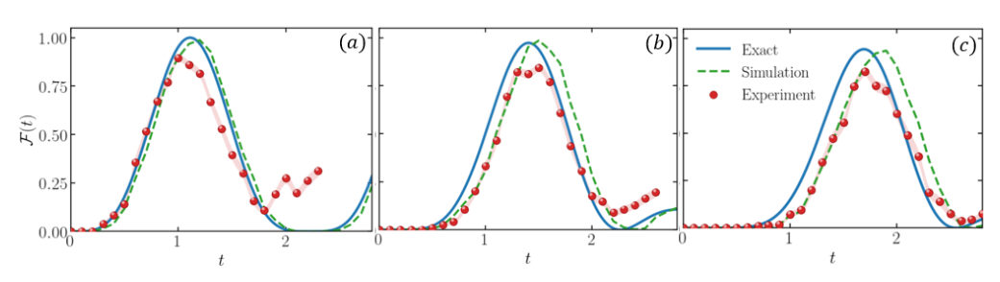
<figcaption class="paper-figure-caption"><b>Fig 3.</b> FIG. 3. Experimental state-transfer fidelity (red circles) as a function of time for NN spin chains with uniform coupling strength J = −1, compared with the corresponding gate-based simulations (green dashed lines) and exact Hamiltonian evolution (blue solid lines) for (a) N = 3, (b) N = 4, and (c) N = 5. As the chain length increases, the fidelity peak shifts to later times while its maximum value decreases, reflecting the increasing challenge of coherent state transfer over longer spin chains. Nevertheless, the measured fidelities remain above the classical threshold of 2/3 for all system sizes investigated, demonstrating a quantum advantage. Both the experimental and gate-based results...</figcaption>
</figure>
<figure class="paper-figure-card">
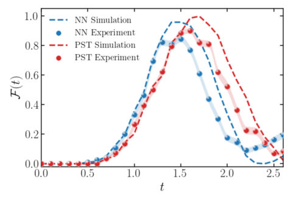
<figcaption class="paper-figure-caption"><b>Fig 4.</b> FIG. 4. Comparison of the state-transfer fidelity for a four- qubit spin chain with uniform NN and engineered PST cou- pling profiles. The blue and red dashed curves correspond to the gate-based simulations for the NN and PST Hamil- tonians, respectively, while the blue and red circles denote the corresponding experimental measurements obtained on IonQ’s Forte-1 trapped-ion quantum processor. The NN chain employs uniform couplings with J = −1, whereas the PST chain uses the engineered coupling profile Jn = J0 p</figcaption>
</figure>
<figure class="paper-figure-card">
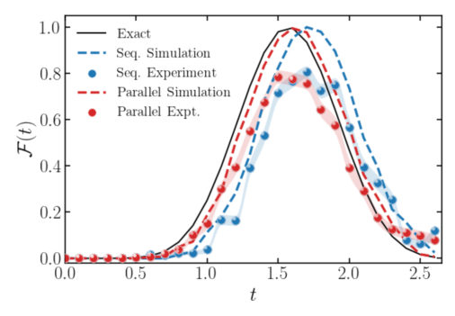
<figcaption class="paper-figure-caption"><b>Fig 5.</b> FIG. 5. Comparison of the sequential and parallel implemen- tations of the engineered perfect state transfer (PST) Hamil- tonian for N = 5. The solid black curve shows the exact continuous time evolution, while the blue and red dashed curves correspond to ideal gate-based simulations using the sequential and parallel Trotter decompositions, respectively. The circles denote the corresponding experimental results ob- tained on IonQ’s Forte Enterprise processor. The parallel implementation reaches the maximum state transfer fidelity at an earlier evolution time while maintaining a comparable peak fidelity, thereby reducing the circuit depth and overall execution time by exploiting the parallel...</figcaption>
</figure>
</div>

<p><strong>Summary.</strong> The authors experimentally demonstrate high-fidelity quantum state transfer across a spin chain using trapped-ion processors. They show that engineering the qubit couplings significantly outperforms simple nearest-neighbor interactions. Crucially, they also optimize the gate implementation by using parallel Trotterization, making Hamiltonian-based communication more practical for real quantum hardware.</p>
<p><strong>Why it may be interesting.</strong> This work directly bridges theoretical quantum information concepts (Hamiltonian dynamics, PST) with cutting-edge experimental hardware (trapped ions), providing concrete benchmarks for scalable quantum networking protocols.</p>
<details>
<summary>Detailed structure</summary>
<p><strong>Main problem.</strong> The central challenge addressed is achieving efficient, high-fidelity quantum communication between distant qubits necessary for scaling quantum processors.</p>
<p><strong>Main result.</strong> Engineered coupling profiles significantly enhance the fidelity of quantum state transfer compared to uniform nearest-neighbor couplings. Furthermore, exploiting Hamiltonian commutation structure allows for a parallel Trotter decomposition that reduces circuit depth and execution time.</p>
<p><strong>Method.</strong> The research combines exact numerical simulations with experimental measurements performed on a trapped-ion quantum processor using gate-based quantum simulation techniques (Trotterization).</p>
<p><strong>Model / system.</strong> The system models a one-dimensional spin chain governed by an XY Hamiltonian, $H = \sum J_{ij} (X_i X_j + Y_i Y_j)$. The physical platform utilized is IonQ's trapped-ion quantum processor.</p>
<p><strong>Key observables.</strong> State Transfer Fidelity ($F(t)$), coherence preservation ($\langle Z_{N-1} 
angle$), circuit depth, and execution time.</p>
<p><strong>Important parameters / regimes.</strong> Coupling strengths ($J_{ij}$), chain length ($N$), Trotter step size ($\Delta t$), and the comparison between uniform vs. engineered coupling profiles (e.g., $J_j \propto j(N-j)$).</p>
<p><strong>Assumptions / limitations.</strong> The primary approximations involve using the first-order Lie-Trotter product formula to simulate continuous time evolution on a discrete gate-based processor, and acknowledging that observed fidelity drops are due to hardware errors.</p>
<p><strong>Figures summary.</strong> Figures illustrate quantum state transfer dynamics, comparing engineered vs. uniform couplings (Fig 4), showing population evolution for both single excitations and superpositions (Figs 6 &amp; 7), and detailing the comparison between sequential and parallel Trotter implementations (Fig 5).</p>
<p><strong>Paper structure.</strong> The paper systematically compares different protocols: first, demonstrating state transfer using nearest-neighbor couplings; second, proving that engineered coupling profiles enhance fidelity; third, optimizing the implementation by showing that parallel decomposition reduces circuit depth compared to serial methods.</p>
</details>
<details>
<summary>Abstract</summary>
<p>Efficient communication between distant qubits is one of the central challenges in scaling quantum processors. Although engineered spin chain protocols have been extensively investigated theoretically, their experimental realization has remained comparatively limited. Here, we experimentally realize engineered quantum communication protocols through digitally simulated spin Hamiltonian on IonQ's Forte 1/ Forte Enterprise 1 trapped-ion quantum processor. Combining exact numerical simulations with quantum hardware experiments, we benchmark uniform nearest-neighbour and engineered coupling profiles and demonstrate that engineered interactions significantly enhance the fidelity of quantum state transfer. We further show that exploiting the commutation structure of the spin Hamiltonian enables a parallel Trotter decomposition that more faithfully reproduces the target dynamics while substantially reducing the circuit depth and execution time compared to the conventional sequential implementations. Our results demonstrate that programmable quantum processors can effectively realize and efficiently implement quantum communication protocols, bringing Hamiltonian-based quantum communication closer to practical quantum technologies.</p>
</details>
<p><sub><a href="#top">↑ back to top</a></sub></p>

<p><a id="paper-2607.12603"></a></p>
<h3 id="constructing-mode-resolved-quantum-optical-models-for-emitters-in-photonic-crystals"><a href="http://arxiv.org/abs/2607.12603v1">Constructing mode-resolved quantum optical models for emitters in photonic crystals</a></h3>
<p><strong>Authors:</strong> Antonio Morales-Pérez, Iñaki García-Elcano, Chiara Devescovi, Maia G. Vergniory, Aitzol García-Etxarri, Alejandro González-Tudela<br>
<strong>Type:</strong> theory · <strong>Category:</strong> other · <strong>PDF:</strong> <a href="https://arxiv.org/pdf/2607.12603v1">https://arxiv.org/pdf/2607.12603v1</a><br>
<strong>Analysis basis:</strong> full PDF text, analyzed in chunks
<strong>Topic relevance:</strong> 🔥 <code>analog quantum simulation</code> <strong>4/5</strong> · 🔥 <code>correlated cavity matter</code> <strong>4/5</strong> · <code>Tavis-Cummings &amp; cavity-many-emitter</code> <strong>3/5</strong> · <code>interference shaping light</code> <strong>3/5</strong> · <code>methods for driven-dissipative</code> <strong>3/5</strong> · <code>correlated / nonlocal dissipation</code> <strong>2/5</strong> · <code>driven-dissipative phase transition</code> <strong>2/5</strong> · <code>entanglement &amp; information structure</code> <strong>2/5</strong> · <code>non-equilibrium dynamics</code> <strong>2/5</strong> · <code>Dicke superradiance</code> <strong>1/5</strong> · <code>Keldysh / 2PI / non-Gaussian methods</code> <strong>1/5</strong> · <code>exotic spin models in light-matter</code> <strong>1/5</strong> · <code>non-equilibrium universality</code> <strong>1/5</strong> · <code>superradiant laser</code> <strong>1/5</strong></p>
<div class="figure-strip-hint">↔ Scroll figures horizontally</div>
<div class="paper-figures-scroll">
<figure class="paper-figure-card">
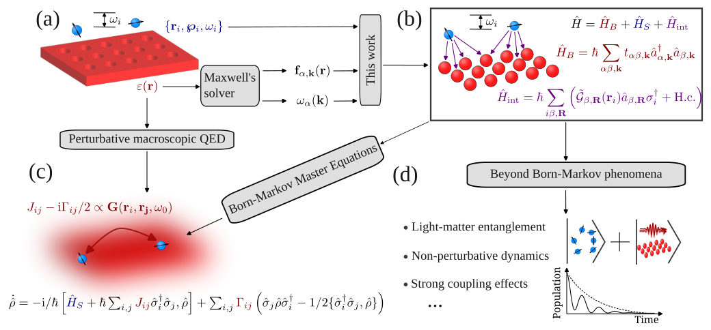
<figcaption class="paper-figure-caption"><b>Fig 1.</b> FIG. 1. Summary of the framework developed in this work. (a) The input data to the framework are the material’s periodic dielectric function within the unit cell, ε(r), from which we calculate the photonic band structure, ωα(k), and the corresponding electric field profiles, fα,k(r), using a Maxwell-equation solver. The emitter positions, ri, polarization vectors, ℘i, and transition frequencies, ωi, are also specified as inputs. (b) These quantities, together with the symmetry-based methodology developed in Ref. [81], are used to construct quantum-optical light-matter Hamiltonians with mode-resolved couplings described by ˆH = ˆHB + ˆHS + ˆHint. The photonic bath, ˆHB, is formulated in...</figcaption>
</figure>
<figure class="paper-figure-card">
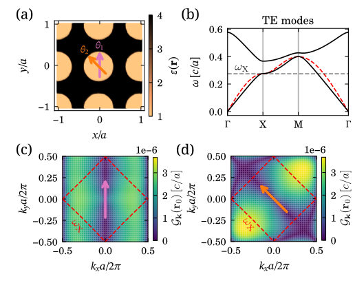
<figcaption class="paper-figure-caption"><b>Fig 2.</b> FIG. 2. Effective light-matter model for a quantum emitter coupled to a 2D photonic crystal. (a) Dielectric permittivity profile ε(r) within the unit cell of the photonic crystal. Magenta and orange arrows indicate the two emitter dipole orientations considered, θ1 = 90◦and θ2 = 135◦, re- spectively. (b) Photonic band structure for transverse-electric modes along the high-symmetry path of the first Brillouin zone (solid black lines). The horizontal dashed line marks the saddle-point frequency ωX, while the red dashed curve shows the fitted reduced-model dispersion of Eq. (22). (c-d) Reciprocal-space coupling profile |Gk(r0)| from Eq. (13) over the first Brillouin zone for an emitter placed...</figcaption>
</figure>
<figure class="paper-figure-card">
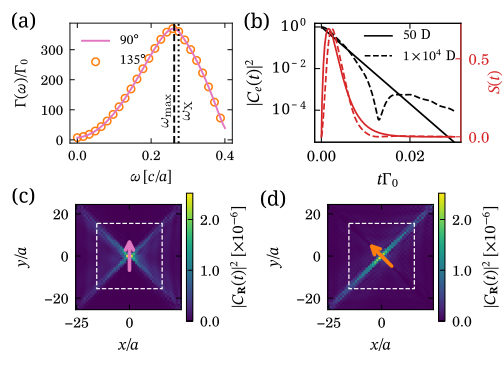
<figcaption class="paper-figure-caption"><b>Fig 3.</b> FIG. 3. Directional spontaneous emission and non- perturbative quantum dynamics. (a) Frequency-resolved spontaneous-emission rate Γ(ω) = Γii(ω) from Eq. (20), nor- malized to the free-space decay rate Γ0 and evaluated with a finite broadening 0+ →10−2 c/a, for an emitter at r0. Re- sults for the two dipole orientations, θ1 = 90◦(solid) and θ2 = 135◦(open circles), are indistinguishable, showing that the local decay spectrum is polarization-independent at this high-symmetry position. The vertical dashed and dash-dotted lines indicate the X-point frequency ωX and the peak fre- quency ωmax = argmaxω Γ(ω), respectively. Throughout this section, the emitter resonance is tuned to ωmax. (b) Time...</figcaption>
</figure>
<figure class="paper-figure-card">
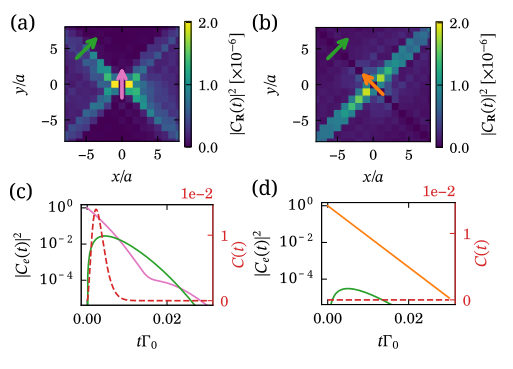
<figcaption class="paper-figure-caption"><b>Fig 4.</b> FIG. 4. Directional probe excitation and bath- mediated entanglement. (a-b) Snapshots of the bath pop- ulation |CR(t)|2 at time tΓ0 = 1.5 × 10−3 for source dipole orientations (a) θ1 = 90◦and (b) θ2 = 135◦. The ma- genta/orange arrows indicate the source emitter at the ori- gin, while the green arrow marks a probe emitter located at rp/a = [−5, 5] with dipole orientation θp = 45◦. The finite bath has N × N = 50 × 50 unit cells, with the dashed white square marking the boundary of the absorbing region. Both emitters share the same resonance frequency ω0 = ωmax and dipole strength |℘0| = 50 D. (c-d) Time evolution for the same two source dipole orientations as in panels (a-b). The left axis...</figcaption>
</figure>
</div>

<p><strong>Summary.</strong> This paper presents a novel constructive framework to model quantum emitters interacting with the complex electromagnetic modes of photonic crystals. By combining symmetry analysis with full Maxwell solver results, the authors derive minimal lattice Hamiltonians that overcome the limitations of existing simplified models. This allows for accurate simulation of polarization-dependent effects and non-Markovian dynamics beyond simple perturbative treatments.</p>
<p><strong>Why it may be interesting.</strong> This work provides a crucial computational bridge, allowing researchers to use advanced quantum many-body techniques (like those used for cavity QED) on complex, structured photonic environments where simple scalar models fail.</p>
<details>
<summary>Detailed structure</summary>
<p><strong>Main problem.</strong> The core challenge is bridging realistic, vectorial electromagnetic descriptions of light-matter interaction in photonic crystals with computationally tractable quantum many-body models.</p>
<p><strong>Main result.</strong> The authors introduce a constructive framework yielding minimal, symmetry-enforced lattice Hamiltonians that accurately reproduce the full photonic dispersion while retaining essential position and polarization dependence.</p>
<p><strong>Method.</strong> The method combines symmetry-constrained tight-binding constructions with numerically computed photonic band structures derived from Maxwell equations to build an effective bosonic Hamiltonian.</p>
<p><strong>Model / system.</strong> The system involves quantum emitters coupled to a photonic crystal, modeled by deriving an effective bosonic lattice Hamiltonian ($\hat{H}_B$) and coupling it to the emitter Hamiltonian ($\hat{H}_S$).</p>
<p><strong>Key observables.</strong> Polarization-dependent directional emission, non-Markovian light-matter dynamics, and entanglement entropy.</p>
<p><strong>Important parameters / regimes.</strong> The model is analyzed in both perturbative (Born-Markov) and non-perturbative regimes; key parameters include the photonic band structure $\omega_\alpha(k)$ and coupling coefficients $g_{\alpha,k}(\mathbf{r}_i)$.</p>
<p><strong>Assumptions / limitations.</strong> Key approximations include the Born approximation, Markovian limit ($    au  o 0$), and secular approximation when comparing to macroscopic QED results.</p>
<p><strong>Figures summary.</strong> The notes mention simulations on a finite lattice using absorbing boundaries to study entanglement entropy and directional emission patterns.</p>
<p><strong>Paper structure.</strong> The paper progresses by first identifying the modeling trade-off, then detailing the constructive framework combining symmetry analysis with band structure calculation to derive the minimal Hamiltonian ($\hat{H}_B + \hat{H}_{int}$), validating this model against Green's function/macroscopic QED results in the perturbative limit, and finally demonstrating its utility for non-Markovian dynamics.</p>
</details>
<details>
<summary>Abstract</summary>
<p>Recent advances are enabling quantum emitters to interact with photonic crystals, whose electromagnetic modes exhibit complex dispersion relations, spatial mode structure, and polarization textures. However, modeling light-matter behavior in these systems faces a persistent trade-off: electromagnetic approaches based on Maxwell-equation solvers provide realistic vectorial descriptions but are difficult to integrate with quantum many-body and non-perturbative methods, whereas simplified quantum-optical lattice models are tractable but typically rely on scalar and spatially independent light-matter couplings that miss essential features of these structured photonic environments. Here, we introduce a constructive framework to derive quantum-optical lattice descriptions that overcome this trade-off. Combining symmetry-constrained tight-binding constructions with numerically computed photonic band structures and field profiles, our method yields minimal, symmetry-enforced lattice Hamiltonians that reproduce the target photonic dispersion while retaining the mode-resolved (position- and polarization-dependent) structure of the light-matter coupling. We show that these models recover Green's-function-based emitter dynamics in the perturbative regime, while providing access to non-perturbative quantum dynamical simulations beyond emitter-only descriptions. As a proof of principle, we apply the framework to a two-dimensional photonic crystal and show that it captures polarization-dependent directional emission inaccessible to scalar models, while enabling the analysis of non-Markovian light-matter dynamics and entanglement. Our results provide a practical bridge between classical electromagnetic simulation tools and quantum-optical many-body and non-Markovian modeling in photonic crystal settings.</p>
</details>
<p><sub><a href="#top">↑ back to top</a></sub></p>

<p><a id="paper-2607.12264"></a></p>
<h3 id="heisenberg-scaling-in-many-body-kinetic-uncertainty-relation-via-quantum-feedback"><a href="http://arxiv.org/abs/2607.12264v1">Heisenberg Scaling in Many-Body Kinetic Uncertainty Relation via Quantum Feedback</a></h3>
<p><strong>Authors:</strong> Hayato Yunoki, Yoshihiko Hasegawa<br>
<strong>Type:</strong> theory · <strong>Category:</strong> other · <strong>PDF:</strong> <a href="https://arxiv.org/pdf/2607.12264v1">https://arxiv.org/pdf/2607.12264v1</a><br>
<strong>Analysis basis:</strong> full PDF text, analyzed in chunks
<strong>Topic relevance:</strong> 🔥 <code>correlated / nonlocal dissipation</code> <strong>4/5</strong> · 🔥 <code>quantum measurements</code> <strong>4/5</strong> · <code>analog quantum simulation</code> <strong>3/5</strong> · <code>measurement-induced transitions</code> <strong>3/5</strong> · <code>methods for driven-dissipative</code> <strong>3/5</strong> · <code>Tavis-Cummings &amp; cavity-many-emitter</code> <strong>2/5</strong> · <code>correlated cavity matter</code> <strong>2/5</strong> · <code>driven-dissipative phase transition</code> <strong>2/5</strong> · <code>non-equilibrium dynamics</code> <strong>2/5</strong> · <code>Dicke superradiance</code> <strong>1/5</strong> · <code>Keldysh / 2PI / non-Gaussian methods</code> <strong>1/5</strong> · <code>entanglement &amp; information structure</code> <strong>1/5</strong> · <code>non-equilibrium universality</code> <strong>1/5</strong> · <code>superradiant laser</code> <strong>1/5</strong></p>
<div class="figure-strip-hint">↔ Scroll figures horizontally</div>
<div class="paper-figures-scroll">
<figure class="paper-figure-card">
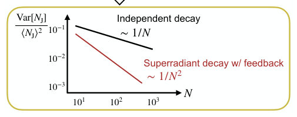
<figcaption class="paper-figure-caption"><b>Fig 1.</b> FIG. 1. Quantum feedback protocol that makes the fluctu- ation of a counting observable scale as 1/N 2 by maintaining highly active states in a superradiant spin ensemble.</figcaption>
</figure>
<figure class="paper-figure-card">
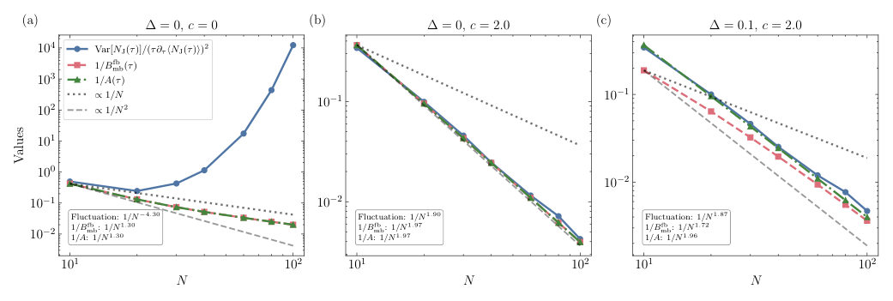
<figcaption class="paper-figure-caption"><b>Fig 2.</b> FIG. 2. Scaling of the relative fluctuation Var[NJ(τ)]/[τ∂τ⟨NJ(τ)⟩]2, the KUR lower bound 1/Bfb mb(τ), and its jump con- tribution 1/A(τ) with the system size N. The data are plotted for N ∈{10, 20, 30, 40, 60, 80, 100}. The relative fluctuation Var[NJ(τ)]/[τ∂τ⟨NJ(τ)⟩]2 is computed from the stochastic counting observable obtained by generating 1000 quantum jump trajectories. The initial state is a spin-coherent state with my = 1.0. The observation time and decay rate are fixed at τ = 5.0 and γ = 0.02 in all panels. The three panels compare (a) ∆= 0 and c = 0, (b) ∆= 0 and c = 2.0, and (c) ∆= 0.1 and c = 2.0. The dotted and dashed gray lines show reference scalings proportional to 1/N and...</figcaption>
</figure>
</div>

<p><strong>Summary.</strong> The paper investigates the theoretical limit of counting precision in many-body superradiant systems. It establishes that while uncontrolled dynamics fail to maintain optimal measurement precision, applying a tailored quantum feedback protocol successfully enforces Heisenberg scaling ($1/N^2$). This work demonstrates that controlled dissipation can be actively utilized to enhance quantum measurements beyond standard limits.</p>
<p><strong>Why it may be interesting.</strong> This work directly addresses fundamental limits on measurement precision in open quantum systems by showing how active feedback can convert inherent dissipation into a resource for achieving Heisenberg scaling, which is highly relevant to quantum metrology applications using cavity QED or atomic ensembles.</p>
<details>
<summary>Detailed structure</summary>
<p><strong>Main problem.</strong> The research aims to determine if Heisenberg scaling ($1/N^2$) can be achieved for the estimation variance of counting observables in many-body quantum systems, and how this requires active control.</p>
<p><strong>Main result.</strong> A quantum feedback protocol was established that successfully achieves Heisenberg scaling for the relative fluctuation of the counting observable by controlling dissipation. This demonstrates that collective dissipation can be harnessed as a resource for enhanced precision.</p>
<p><strong>Method.</strong> The analysis involves deriving many-body Kinetic Uncertainty Relations (KURs) under feedback control and solving mean-field equations derived from the feedback-modified master equation.</p>
<p><strong>Model / system.</strong> The system modeled is an ensemble of $N$ two-level systems exhibiting superradiance, analyzed using a quantum feedback protocol applied to its dynamics. The evolution is governed by a feedback-controlled master equation.</p>
<p><strong>Key observables.</strong> Counting observable ($N_J(	au)$), relative fluctuation ($  ext{Var}[N_J(   au)] / \langle N_J( au) 
angle^2$), and the lower bound set by the Kinetic Uncertainty Relation (KUR).</p>
<p><strong>Important parameters / regimes.</strong> Particle number $N$, time $  au$, feedback strength $
u = c/N$, and system parameters like decay rates ($\gamma$).</p>
<p><strong>Assumptions / limitations.</strong> The analysis relies on the mean-field approximation for large-$N$ regimes, which simplifies the dynamics of collective spin operators.</p>
<p><strong>Figures summary.</strong> Figure 2 compares the relative fluctuation (blue), KUR lower bound (red), and jump contribution (green) versus $N$ for cases with no feedback, optimal feedback, and feedback combined with precession.</p>
<p><strong>Paper structure.</strong> The paper first introduces the problem of achieving Heisenberg scaling in counting observables. It then develops the theoretical framework using quantum feedback to modify the system dynamics and derive a corresponding many-body KUR. Finally, it presents analytical derivations and numerical simulations confirming the $1/N^2$ scaling under optimal control.</p>
</details>
<details>
<summary>Abstract</summary>
<p>Precision is a central figure of merit for quantum devices, including quantum clocks whose performance is determined by the stability of counting events. Kinetic uncertainty relations set fundamental limits on the precision of such counting observables, showing that their fluctuations cannot be suppressed without increasing the activity of the system. While many-body effects offer a natural route to enhanced performance, it remains unclear how far they can enhance counting precision. In quantum metrology, Heisenberg scaling refers to the suppression of estimation variance as $1/N^2$ with the particle number $N$. This raises the question of whether the fluctuation of counting observables can exhibit an analogous Heisenberg-like $1/N^2$ scaling, but no protocol for achieving it has been established. We establish a protocol that achieves this scaling by applying quantum feedback to a superradiant spin ensemble. Because the superradiant enhancement of activity is transient, the scaling of counting precision becomes achievable only when it is controlled by feedback. We establish this result analytically through a many-body kinetic uncertainty relation and feedback-modified mean-field equations, and show it by numerical simulations. Our results demonstrate that feedback can turn collective dissipation into a resource for Heisenberg scaling of counting precision.</p>
</details>
<p><sub><a href="#top">↑ back to top</a></sub></p>

<p><a id="paper-2607.12002"></a></p>
<h3 id="remote-entanglement-of-solid-state-spin-qubits-integrated-in-broadband-waveguides"><a href="http://arxiv.org/abs/2607.12002v1">Remote Entanglement of Solid-State Spin Qubits Integrated in Broadband Waveguides</a></h3>
<p><strong>Authors:</strong> Christopher Waas, Timo Dolné, Hans K. C. Beukers, Alexander M. Stramma, Nina Codreanu, Noé Mathieu, Ronald Hanson<br>
<strong>Type:</strong> experiment · <strong>Category:</strong> quantum information and computing · <strong>PDF:</strong> <a href="https://arxiv.org/pdf/2607.12002v1">https://arxiv.org/pdf/2607.12002v1</a><br>
<strong>Analysis basis:</strong> full PDF text, analyzed in chunks
<strong>Topic relevance:</strong> 🔥 <code>QC/QI experiment</code> <strong>4/5</strong> · <code>interference shaping light</code> <strong>3/5</strong> · <code>quantum optics experiment</code> <strong>3/5</strong> · <code>spintronics-quantum-optics interface</code> <strong>3/5</strong> · <code>entanglement &amp; information structure</code> <strong>2/5</strong> · <code>exotic spin models in light-matter</code> <strong>2/5</strong> · <code>quantum measurements</code> <strong>2/5</strong> · <code>Tavis-Cummings &amp; cavity-many-emitter</code> <strong>1/5</strong> · <code>analog quantum simulation</code> <strong>1/5</strong> · <code>correlated cavity matter</code> <strong>1/5</strong> · <code>non-equilibrium dynamics</code> <strong>1/5</strong></p>
<div class="figure-strip-hint">↔ Scroll figures horizontally</div>
<div class="paper-figures-scroll">
<figure class="paper-figure-card">
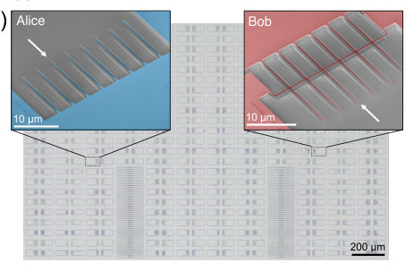
<figcaption class="paper-figure-caption"><b>Fig 1.</b> Figure 1. Quantum network platform. (a) Schematic of the platform. Diamond tin-vacancy spin qubits, with inversion symmetric structure (upper inset), are integrated into broad- band diamond waveguide devices, operated around T = 1 K in a magnetic field of 117 mT (Appendix C). The microwave (MW) and laser fields for spin qubit and optical control (lower inset) are routed to individual devices via separate wirebonds and tapered fibers, respectively. Entanglement is generated by interference of spin-entangled photons at a central beamsplit- ter and detection via superconducting nanowire single-photon detectors (SNSPDs). (b) Optical microscope image of the diamond chip. Unit cells, each...</figcaption>
</figure>
<figure class="paper-figure-card">
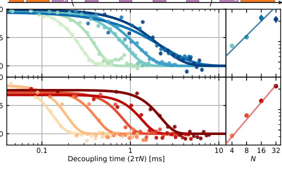
<figcaption class="paper-figure-caption"><b>Fig 2.</b> Figure 2. Characterization of the quantum network node. Pulse sequences used are shown above each panel. Each sequence starts with a charge-resonance (CR) check and spin reset pulse. (a) Fast optical excitation and single-photon detection. Photon detection probability density, measured in counts per shot per time (CPSPT), as a function of time. The photon detection window, starting right after the optical π-pulse, is indicated in green. Inset: second-order auto-correlation functions g2</figcaption>
</figure>
<figure class="paper-figure-card">
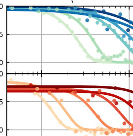
<figcaption class="paper-figure-caption"><b>Fig 3.</b> Figure 3(a) shows the experimental sequence. First, to ensure high optical coherence of each SnV center as well as precise optical frequency alignment between the two SnV centers, we apply charge-resonance checks. In this procedure, for each SnV, photon counts are recorded while simultaneously driving the two spin-cycling tran- sitions and continuation is conditioned on surpassing a pre-defined threshold (Appendix D 1). The sequence pro- ceeds once both SnV centers have passed this check. Then, following a spin reset pulse, a series of optical π-pulses is applied to the two SnV centers. To maximize the tempo- ral overlap of the emitted photons on the beamsplitter,</figcaption>
</figure>
<figure class="paper-figure-card">
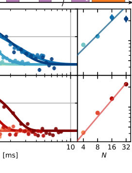
<figcaption class="paper-figure-caption"><b>Fig 4.</b> Figure 3(b) shows the measured coincidences as a func- tion of pulse number difference. The decrease in co- incidences for higher absolute values of the difference is caused by the limited possible combinations in a block of 100 excitation pulses. The visibility is given by V = 1 −(N indist 0 /N dist 0 ), where N indist 0 (N dist 0 ) is the number of coincidences with pulse number difference of 0 for the temporally overlapped (temporally separated)</figcaption>
</figure>
<figure class="paper-figure-card">
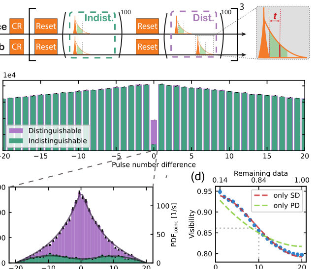
<figcaption class="paper-figure-caption"><b>Fig 5.</b> Figure 3. Two-photon quantum interference. (a) Pulse sequence. Indistinguishable (distinguishable) photon pairs are created by simultaneous (non-simultaneous) resonant optical excitation of the two SnVs. (b) Histogram of measured coincidences for the two scenarios as a function of excitation pulse difference. For a pulse difference of zero, indistinguishable photons interfere yielding a strong suppression of coincidences. (c) Histogram of measured coincidences for zero pulse difference as a function of detection time difference ∆t. The solid lines are the coincidence probability density functions calculated from the fit in (d). (d) Visibility as a function of maximum detection time...</figcaption>
</figure>
</div>

<p><strong>Summary.</strong> The research demonstrates scalable methods for generating remote entanglement between solid-state spin qubits ($   ext{SnV}$ centers) integrated into on-chip broadband waveguides. By circumventing the need for spectral matching to optical cavities, they achieve high-fidelity two-photon interference and heralded entanglement generation. This establishes a robust platform for building quantum network nodes.</p>
<p><strong>Why it may be interesting.</strong> This work directly addresses the physical implementation challenges for quantum networking nodes by replacing fragile cavity coupling with robust waveguide integration, a critical step for scaling solid-state quantum technologies.</p>
<details>
<summary>Detailed structure</summary>
<p><strong>Main problem.</strong> The primary goal is to demonstrate scalable quantum network links by achieving remote entanglement between solid-state spin qubits integrated into broadband waveguides, overcoming limitations of previous cavity-enhanced systems.</p>
<p><strong>Main result.</strong> The authors successfully demonstrated heralded remote spin-spin entanglement using the waveguide platform, achieving high two-photon interference visibility comparable to cavity records without needing spectral matching.</p>
<p><strong>Method.</strong> Entanglement is generated via a photon-mediated process (Barrett-Kok protocol) involving single-photon emission from diamond tin-vacancy ($ ext{SnV}$) centers and subsequent quantum interference measurements.</p>
<p><strong>Model / system.</strong> The platform utilizes $ ext{SnV}$ spin qubits embedded in separate on-chip broadband waveguides fabricated on a high-purity diamond chip, operating at cryogenic temperatures. This system allows for intrinsic photon emission coupled to the waveguide mode.</p>
<p><strong>Key observables.</strong> Entanglement fidelity ($F$), two-photon interference visibility ($V$), single-photon detection probability density, and spin coherence time ($T_{2	ext{DD}}$).</p>
<p><strong>Important parameters / regimes.</strong> Operating temperature of $1	ext{ K}$; high structural yield (99%); entanglement success probability limited by photon collection efficiency ($\approx 0.3\%$).</p>
<p><strong>Assumptions / limitations.</strong> The analysis relies on the assumption that broadband waveguides provide sufficient coupling and low loss to enable scalable, high-yield integration compared to cavity methods.</p>
<p><strong>Figures summary.</strong> Figures illustrate the platform schematic (Fig. 1), qubit characterization (Rabi oscillations, coherence time scaling in Fig. 2), two-photon interference measurements showing visibility vs. time difference (Fig. 3), and the full heralded entanglement sequence (Fig. 4).</p>
<p><strong>Paper structure.</strong> The paper proceeds by characterizing the fundamental properties of the $   ext{SnV}$ qubits (coherence, photon emission) in waveguides, demonstrating high-visibility two-photon interference without cavities, and culminating in the realization and characterization of heralded remote spin-spin entanglement.</p>
</details>
<details>
<summary>Abstract</summary>
<p>Solid-state spin-photon interfaces promise to scale quantum networks through on-chip photonic integration and multiplexed entanglement generation. To date, remote entanglement between integrated emitters has been realized only in cavity-enhanced systems, where fabrication yield and spectral matching remain major obstacles. Here we demonstrate heralded remote entanglement between diamond tin-vacancy spin qubits embedded in separate on-chip waveguides. Combining intrinsically efficient photon emission with a broadband waveguide architecture provides high device yield and obviates the need for spectral matching to cavity modes. We realize coherent optical and spin control and achieve high-visibility two-photon interference. By combining photon-mediated entanglement generation with real-time feedforward, we produce a consistent entangled state independent of the heralding pattern. These results establish waveguide-integrated tin-vacancy centers as a compelling platform for scalable quantum network nodes.</p>
</details>
<p><sub><a href="#top">↑ back to top</a></sub></p>

<p><a id="paper-2607.12581"></a></p>
<h3 id="entropy-transport-in-programmable-quantum-junctions"><a href="http://arxiv.org/abs/2607.12581v1">Entropy Transport in Programmable Quantum Junctions</a></h3>
<p><strong>Authors:</strong> Radhika Joshi, Yuli V. Nazarov, Mohammad H. Ansari<br>
<strong>Type:</strong> theory · <strong>Category:</strong> statistical mechanics · <strong>PDF:</strong> <a href="https://arxiv.org/pdf/2607.12581v1">https://arxiv.org/pdf/2607.12581v1</a><br>
<strong>Analysis basis:</strong> full PDF text, analyzed in chunks
<strong>Topic relevance:</strong> 🔥 <code>methods for driven-dissipative</code> <strong>4/5</strong> · 🔥 <code>non-equilibrium dynamics</code> <strong>4/5</strong> · <code>Keldysh / 2PI / non-Gaussian methods</code> <strong>3/5</strong> · <code>driven-dissipative phase transition</code> <strong>3/5</strong> · <code>correlated / nonlocal dissipation</code> <strong>2/5</strong> · <code>entanglement &amp; information structure</code> <strong>2/5</strong> · <code>non-equilibrium universality</code> <strong>2/5</strong> · <code>analog quantum simulation</code> <strong>1/5</strong> · <code>correlated cavity matter</code> <strong>1/5</strong></p>
<div class="figure-strip-hint">↔ Scroll figures horizontally</div>
<div class="paper-figures-scroll">
<figure class="paper-figure-card">
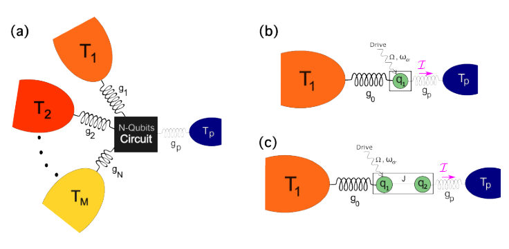
<figcaption class="paper-figure-caption"><b>Fig 1.</b> FIG. 1. (a) General setup: The quantum junction consists of N-qubits. The qubits can be individually driven and can also interact with each other. The dissipative dynamics of the quantum system are governed by M-thermal reservoirs maintained at temperatures T1, . . . , TM. Desired quantity is the entropy flow to the probe reservoir Rp, which is kept at temperature Tp. (b,c) Entropy transport in driven one- and two-qubit junctions: The entropy conductance I into the probe reservoir Rp is evaluated for two representative quantum junctions. Reservoirs R1 and Rp are maintained at temperatures T1 and Tp, respectively. (b) A single qubit is coupled to both reservoirs and driven resonantly with...</figcaption>
</figure>
<figure class="paper-figure-card">
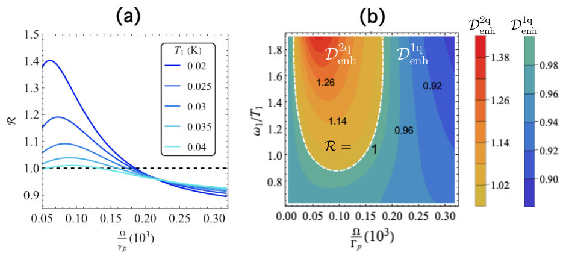
<figcaption class="paper-figure-caption"><b>Fig 2.</b> FIG. 2. Entropy-conduction enhancement factor (R) at the stationary state as a function of Ωand T1. We consider the main reservoir temperature T1 to be between 20-60 mK while probe reservoir’s temperature is nearly zero. (a) In colder environment the two-qubit can be programmed to be faster and reach a peak value at weak driving regime (Ω≪∆). Increasing the driving power flips the ratio to make single-qubit faster than two qubit junction. (b) Contour map of R in the (Ω, T1) parameter plane. The dashed contour marks R = 1, separating the regime of two-qubit flow dominance R &gt; 1 from the opposite regime R &lt; 1, where the single-qubit junction yields the larger response. Here in the two-qubit...</figcaption>
</figure>
<figure class="paper-figure-card">
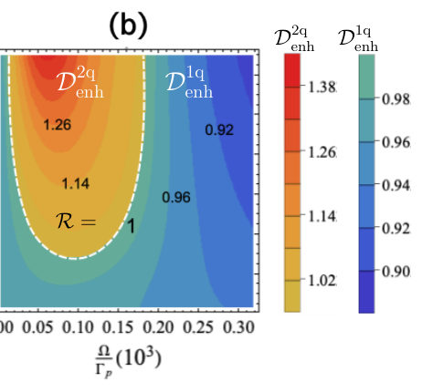
<figcaption class="paper-figure-caption"><b>Fig 3.</b> Fig. 2a shows the stationary entropy conductance en- hancement factor R for discrete temperatures T1 and continuously varying drive amplitude Ω. The two-qubit junction exhibits a larger stationary entropy conductance in the weak-driving regime, Ω</figcaption>
</figure>
<figure class="paper-figure-card">
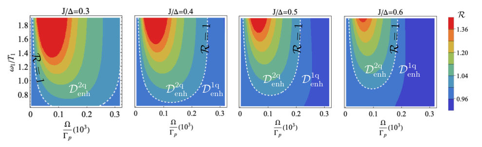
<figcaption class="paper-figure-caption"><b>Fig 4.</b> FIG. 3. Entropy-conduction enhancement factor (R) at the stationary state for varying J/∆. Enhancement factor R for four representative values of the dimensionless coupling ratio J/∆= 0.3, 0.4, 0.5 and 0.6. Regions with R &gt; 1 identify regimes in which the driven two-qubit junction transports entropy more efficiently than the driven single-qubit junction. The enhancement region expands as J/∆is reduced, showing that entropy transport can be tuned by controlling the hybridization between the two qubits.</figcaption>
</figure>
<figure class="paper-figure-card">
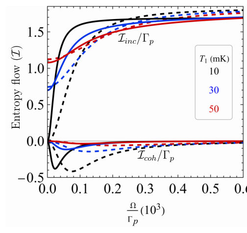
<figcaption class="paper-figure-caption"><b>Fig 5.</b> FIG. 4. Coherent and incoherent contributions to entropy flow. The total entropy flow I is decomposed into incoherent and coherent components, Iinc and Icoh, respec- tively. The incoherent contribution is positive, whereas the coherent contribution is negative. The probe temperature is fixed at Tp = 10 mK, while the temperature T1 of reservoir R1 is varied. Entropy flow in two-qubit junction I2q (solid lines), converges at weaker driving compared to the the entropy flow in single-qubit junction I1q (dashed lines).</figcaption>
</figure>
</div>

<p><strong>Summary.</strong> This paper demonstrates that driven quantum junctions can act as programmable devices for controlling physical entropy flow. By comparing single and two-qubit architectures, the authors show multi-qubit systems offer thermodynamic advantages while revealing novel effects like coherent entropy currents and negative differential conductance. The methodology relies on advanced non-equilibrium quantum field theory techniques.</p>
<p><strong>Why it may be interesting.</strong> This work directly addresses non-equilibrium quantum thermodynamics by treating entropy transport as a measurable, controllable quantity in engineered quantum circuits, which is highly relevant for open quantum systems research.</p>
<details>
<summary>Detailed structure</summary>
<p><strong>Main problem.</strong> The study focuses on achieving programmable control over physical entropy transport mediated by driven quantum junctions, moving beyond simple energy balance considerations.</p>
<p><strong>Main result.</strong> Two-qubit junctions can enhance entropy transfer compared to single-qubit ones using lower driving power. The work also reveals coherent contributions and negative differential entropy conductance.</p>
<p><strong>Method.</strong> The analysis employs the Keldysh diagrammatic approach and solves the Lindblad master equation under Born-Markov approximations to calculate nonlinear Rényi entropy flow.</p>
<p><strong>Model / system.</strong> The system models $N$-qubit junctions coupled to multiple thermal reservoirs and a probe reservoir, described by an extended Hamiltonian including qubit interactions and external driving fields. The dynamics are governed by the Lindblad master equation.</p>
<p><strong>Key observables.</strong> Entropy flow ($\mathcal{I}_\alpha$), entropy conductance, coherent contribution to entropy current, and negative differential entropy conductance.</p>
<p><strong>Important parameters / regimes.</strong> Driving frequency ($\omega_{dr}$), coupling strengths ($g_{ij}, J$), and the Rényi order $\alpha$.</p>
<p><strong>Assumptions / limitations.</strong> The weak coupling condition for the probe reservoir is assumed; calculations rely on Born-Markov, secular, and local master equation approximations.</p>
<p><strong>Figures summary.</strong> Figures illustrate the general setup of the junctions coupled to baths. Specific figures show the enhancement factor ($R$) comparing two-qubit vs. single-qubit entropy conductance versus driving strength ($\Omega$), and energy spectra/anticrossings related to the Hamiltonian eigenstates.</p>
<p><strong>Paper structure.</strong> The paper establishes the theoretical framework for nonlinear entropy flow, develops calculations using Keldysh formalism for both single and two-qubit junctions, compares the resulting entropy conductances, and analyzes specific non-intuitive effects like coherent contributions and negative differential conductance.</p>
</details>
<details>
<summary>Abstract</summary>
<p>We show that driven qubit junctions enable programmable control of physical entropy transport, with entropy conductance governed by quantum dynamics rather than by reservoir parameters alone. By comparing two simple quantum architectures -- a driven single-qubit junction and a driven two-qubit junction -- we find that the two-qubit junction enhances entropy transfer while requiring substantially lower driving power than its single-qubit counterpart. We further reveal two non-intuitive effects in both junctions: a sizable coherent contribution to the entropy current that emerges only under resonant driving, and negative differential entropy conductance, where increasing the thermal bias suppresses entropy flow into the probe reservoir. These results identify quantum logic architectures as programmable devices for entropy transport and suggest routes toward quantum feedback control, reservoir protection and refrigeration in driven quantum circuits.</p>
</details>
<p><sub><a href="#top">↑ back to top</a></sub></p>

<p><a id="paper-2607.12573"></a></p>
<h3 id="activating-thermally-charged-quantum-batteries-in-finite-time-thermodynamic-trade-offs-between-correlations-work-and-information"><a href="http://arxiv.org/abs/2607.12573v1">Activating thermally charged quantum batteries in finite time: Thermodynamic trade-offs between correlations, work, and information</a></h3>
<p><strong>Authors:</strong> Bhaskar Barman, Janine Splettstoesser, Henning Kirchberg<br>
<strong>Type:</strong> theory · <strong>Category:</strong> statistical mechanics · <strong>PDF:</strong> <a href="https://arxiv.org/pdf/2607.12573v1">https://arxiv.org/pdf/2607.12573v1</a><br>
<strong>Analysis basis:</strong> full PDF text, analyzed in chunks
<strong>Topic relevance:</strong> 🔥 <code>non-equilibrium dynamics</code> <strong>4/5</strong> · <code>entanglement &amp; information structure</code> <strong>3/5</strong> · <code>methods for driven-dissipative</code> <strong>3/5</strong> · <code>non-equilibrium universality</code> <strong>3/5</strong> · <code>Keldysh / 2PI / non-Gaussian methods</code> <strong>2/5</strong> · <code>correlated / nonlocal dissipation</code> <strong>2/5</strong> · <code>driven-dissipative phase transition</code> <strong>2/5</strong> · <code>scars &amp; prethermalization</code> <strong>1/5</strong></p>
<div class="figure-strip-hint">↔ Scroll figures horizontally</div>
<div class="paper-figures-scroll">
<figure class="paper-figure-card">
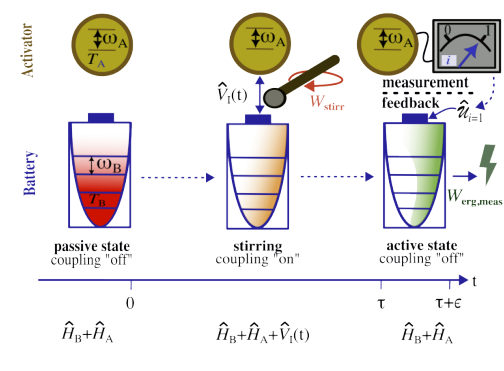
<figcaption class="paper-figure-caption"><b>Fig 1.</b> Figure 1. Schematic of the activation process. An initially thermally-charged harmonic-oscillator quantum battery (fre- quency ωB and Hamiltonian ˆHB), is prepared in a passive thermal state at temperature TB. At time t = 0, the bat- tery is coupled to a two-level activator (frequency ωA and Hamiltonian ˆHA) initialized in a thermal state at tempera- ture TA, by the time-dependent stirring Hamiltonian ˆVI(t) and requiring a stirring work Wstirr. At t = τ, the battery and activator are decoupled. A projective measurement of the activator in the state i = 0 or i = 1 conditions a tay- lored, unitary energy-extraction operation ˆUi=0;1. The mea- surement, feedback, and energy extraction...</figcaption>
</figure>
<figure class="paper-figure-card">
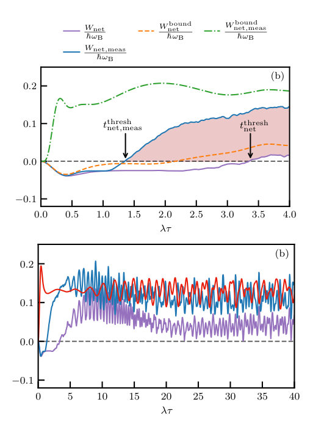
<figcaption class="paper-figure-caption"><b>Fig 2.</b> Figure 2. (a) Net extracted useful energy with measurement, Wnet,meas, and without measurement, Wnet, plotted against stirring time λτ. Also their respective bounds, W bound net,meas, and, W bound net,meas, are shown. Wnet and Wnet,meas become posi- tive at the threshold times, tthresh net and tthresh net,meas, respectively. (b) Wnet, Wnet,meas and internal energy change ∆EA of the activator over a longer stirring time. Battery and activa- tor parameters are set to ℏωA/TA = 1.2, TA/TB = 0.15, ωA/ωB = 1.2, λ/ωB = 0.1, and Wstirr &gt; 0 (identified as heat valve regime (B1) during the stirring stroke).</figcaption>
</figure>
<figure class="paper-figure-card">
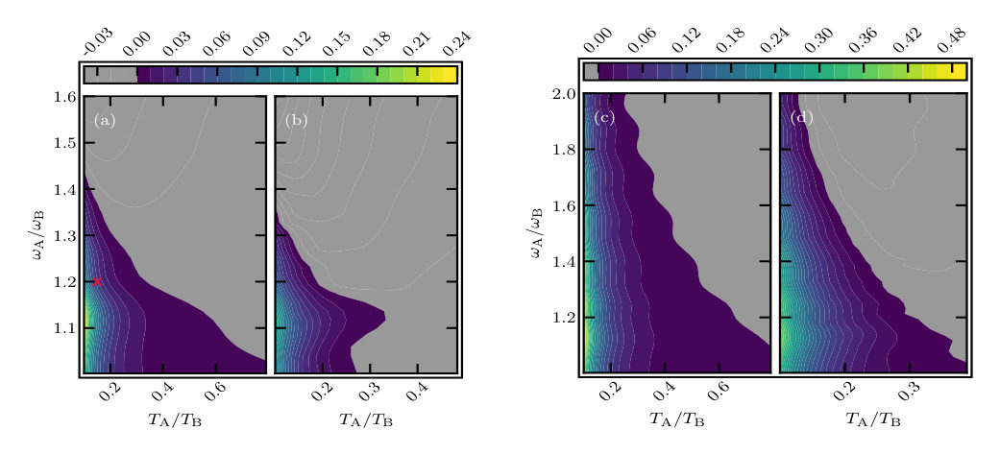
<figcaption class="paper-figure-caption"><b>Fig 3.</b> Figure 3. (a) W bound net , (b) Wnet , (c) W bound net,meas and (d) Wnet,meas as functions of relative frequency ωA/ωB and relative temperature TA/TB. We use τ = 4.0 λ−1, ℏωB/TB = 0.1, and λ/ωB = 0.01. The red cross in (a) indicates the values for ωA/ωB and TA/TB chosen in Fig. 2.</figcaption>
</figure>
<figure class="paper-figure-card">
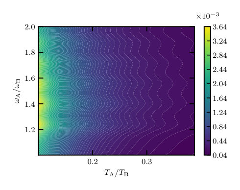
<figcaption class="paper-figure-caption"><b>Fig 4.</b> Figure 4. Information gain I(τ), Eq. (22), plotted against ωA/ωB and TA/TB for τ = 4.0λ−1, ℏωB/TB = 0.1, and λ/ωB = 0.01.</figcaption>
</figure>
<figure class="paper-figure-card">
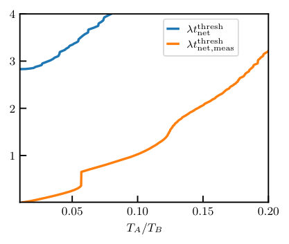
<figcaption class="paper-figure-caption"><b>Fig 5.</b> Figure 5. λ tthresh net and λ tthresh net,meas plotted against the rela- tive temperature TA/TB at ωA/ωB = 1.4, ℏωB/TB = 0.07, and λ/ωB = 0.1, and Wstirr &gt; 0 (identified as heat valve regime (B1)). It shows the advantage of net energy extrac- tion time in the presence of a measurement over the net energy extraction time.</figcaption>
</figure>
</div>

<p><strong>Summary.</strong> The paper proposes a protocol using time-dependent coupling (stirring) to activate passive quantum batteries, allowing for controlled energy extraction. It rigorously analyzes the thermodynamic trade-offs between work input, correlation generation, and information gain during this activation process. The results provide quantitative bounds on the maximum usable energy extractable from such systems.</p>
<p><strong>Why it may be interesting.</strong> This work directly addresses non-equilibrium thermodynamics and quantum resource theory, which is highly relevant to open quantum systems, quantum heat engines, and understanding energy flow in complex quantum devices.</p>
<details>
<summary>Detailed structure</summary>
<p><strong>Main problem.</strong> The core problem is developing a method to activate passive, thermally charged quantum batteries into an active state to enable controlled energy extraction.</p>
<p><strong>Main result.</strong> The authors derive bounds on the maximal net extractable energy by explicitly accounting for the energetic cost of stirring, the entropic cost of correlation generation, and the activation time.</p>
<p><strong>Method.</strong> The analysis uses thermodynamic principles, quantifying useful work via ergotropy and deriving upper bounds by relating it to non-equilibrium free energy differences.</p>
<p><strong>Model / system.</strong> The model consists of a quantum battery ($\hat{H}_B$) and an ancillary activator ($\hat{H}_A$), coupled by a time-dependent interaction Hamiltonian $\hat{V}_I(t)$ during a 'stirring protocol.'</p>
<p><strong>Key observables.</strong> Net extractable energy (net ergotropy), power output, work exchanged ($W_{	ext{stir}}$), and correlation build-up.</p>
<p><strong>Important parameters / regimes.</strong> Activation Time ($  au$), relative temperatures ($T_A/T_B$), and frequency ratios ($\omega_A/\omega_B$).</p>
<p><strong>Assumptions / limitations.</strong> The protocol assumes that environmental effects can be neglected during the short stirring time (timescale separation), and initial states are thermal Gibbs states.</p>
<p><strong>Figures summary.</strong> Figure 7 illustrates three thermodynamic operating regimes (Heat Valve, Heat Engine, Refrigerator) defined by mathematical conditions on temperatures and frequencies, showing how ergotropy varies across these regimes.</p>
<p><strong>Paper structure.</strong> The paper follows a logical progression: defining the passive battery state $
ightarrow$ introducing the time-dependent stirring protocol ($\hat{V}_I(t)$) $
ightarrow$ deriving bounds for net extractable energy by accounting for costs $
ightarrow$ applying this framework to an experimentally relevant waveguide-QED setup.</p>
</details>
<details>
<summary>Abstract</summary>
<p>Thermally charged quantum batteries provide a stable and easy-to-have energy resource, but remain passive and therefore do not allow useful energy extraction on demand via unitary operations. We introduce a time-dependent stirring protocol that activates a thermally charged quantum battery through a time-dependent coupling to an auxiliary activator, thereby generating correlations that drive the battery into an active state. Accounting explicitly for the energetic cost of the stirring process, the entropic cost of correlation generation and the activation time, we derive bounds on the maximal net extractable energy. Incorporating projective measurement on the activator and exploiting the information gained through the measurement further enhances the extractable energy. As an experimentally relevant example, we analyze a waveguide-QED setup where a harmonic-oscillator battery (waveguide) is stirred and monitored by a two-level system. We characterize the performance of the protocol in terms of net extractable energy (net ergotropy) and power output.</p>
</details>
<p><sub><a href="#top">↑ back to top</a></sub></p>

<p><a id="paper-2607.12044"></a></p>
<h3 id="dissipative-phase-transitions-and-chaos-in-two-photon-driven-quantum-optomechanics"><a href="http://arxiv.org/abs/2607.12044v1">Dissipative phase transitions and chaos in two-photon driven quantum optomechanics</a></h3>
<p><strong>Authors:</strong> Giovanni Bragadin, Filippo Ferrari, Lorenzo Fioroni, Matteo Seclì, Vincenzo Macrì, Vincenzo Savona, Alberto Mercurio<br>
<strong>Type:</strong> theory · <strong>Category:</strong> statistical mechanics · <strong>PDF:</strong> <a href="https://arxiv.org/pdf/2607.12044v1">https://arxiv.org/pdf/2607.12044v1</a><br>
<strong>Analysis basis:</strong> full PDF text, analyzed in chunks
<strong>Topic relevance:</strong> 🔥 <code>driven-dissipative phase transition</code> <strong>4/5</strong> · <code>methods for driven-dissipative</code> <strong>3/5</strong> · <code>non-equilibrium universality</code> <strong>3/5</strong> · <code>Keldysh / 2PI / non-Gaussian methods</code> <strong>2/5</strong> · <code>correlated / nonlocal dissipation</code> <strong>2/5</strong> · <code>non-equilibrium dynamics</code> <strong>2/5</strong> · <code>Tavis-Cummings &amp; cavity-many-emitter</code> <strong>1/5</strong> · <code>analog quantum simulation</code> <strong>1/5</strong> · <code>correlated cavity matter</code> <strong>1/5</strong> · <code>quantum measurements</code> <strong>1/5</strong></p>
<div class="figure-strip-hint">↔ Scroll figures horizontally</div>
<div class="paper-figures-scroll">
<figure class="paper-figure-card">
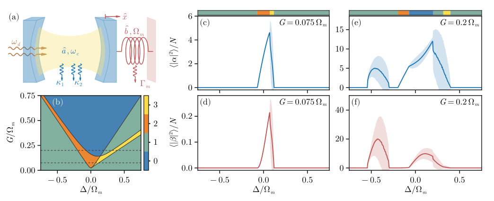
<figcaption class="paper-figure-caption"><b>Fig 1.</b> FIG. 1. Mean-field analysis of the two-photon optomechanical system. (a) Schematic representation of the setup. An optical cavity (in blue) is coupled to a mechanical oscillator (in red). The cavity is driven by a two-photon pump and is subject to both single- and two-photon losses, with rates κ1 and κ2, respectively. The mechanical oscillator has frequency Ωm and damping rate Γm. (b) Stability diagram in the (∆/Ωm, G/Ωm) plane. The colors indicate the number of physical and stable mean- field solutions, while the dashed horizontal lines mark the two cuts used in the mean-field simulations. (c),(d) Mean photon (blue) and phonon (red) occupations along the low-pump cut G = 0.075 Ωm. In this...</figcaption>
</figure>
<figure class="paper-figure-card">

<figcaption class="paper-figure-caption"><b>Fig 2.</b> FIG. 3. Emergence of a first-order dissipative phase tran- sition with symmetry breaking as a function of the pump strength G/Ωm for increasing N. (a) Rescaled photon occu- pation ⟨ˆa†ˆa⟩/N, displaying a sharp jump that becomes more abrupt as N increases. The inset shows the corresponding rescaled phonon occupation ⟨ˆb†ˆb⟩/N. (b) Real parts of the two Liouvillian eigenvalues with smallest modulus, −Re[λ1,2/Ωm], for N = 5. The eigenvalue λ1 ∈L−1 (blue solid line) be- comes small throughout the symmetry-broken region, while λ2 ∈L1 (red dashed line) becomes small only close to the critical point. This indicates the coexistence of metastable states and the discontinuous nature of the...</figcaption>
</figure>
<figure class="paper-figure-card">

<figcaption class="paper-figure-caption"><b>Fig 3.</b> FIG. 2. Emergence of a second-order dissipative phase tran- sition as a function of the pump strength G/Ωm for increas- ing scaling parameter N. (a) Rescaled photon occupation ⟨ˆa†ˆa⟩/N. The smooth increase of the occupation across the critical point is consistent with a continuous transition. The inset shows the corresponding rescaled phonon occupation ⟨ˆb†ˆb⟩/N. (b) Rescaled Liouvillian gap −Re[λ1/Ωm]. As N increases, the gap decreases and remains close to zero over an extended region, signaling the emergence of the symmetry- broken phase. The inset shows the error 1−f(ρss, ξ), where f is the fidelity between the steady state and its reconstructed form ξ = (ρ+ + ρ−)/2. The decrease of...</figcaption>
</figure>
<figure class="paper-figure-card">

<figcaption class="paper-figure-caption"><b>Fig 4.</b> FIG. 4. Steady-state and phase-space characterization as a function of the detuning ∆/Ωm at fixed pump strength G = 0.075 Ωm and system size N = 5. (a),(b) Rescaled photon and phonon occupations, ⟨ˆa†ˆa⟩/N and ⟨ˆb†ˆb⟩/N. The occupations show a smooth onset at negative detuning and a sharp drop at positive detuning. (c) Real parts of the two Liouvillian eigenvalues with smallest modulus, −Re[λ1,2/Ωm]. The eigenvalue λ1 ∈L−1 remains small over the symmetry-broken region, while λ2 ∈L1 becomes small only close to the positive-detuning transition, signaling the first-order transition. (d)–(g) Wigner functions of the optical mode for representative detunings chosen inside the regions separated by...</figcaption>
</figure>
<figure class="paper-figure-card">

<figcaption class="paper-figure-caption"><b>Fig 5.</b> FIG. 5. Classical and quantum characterization of the high-pump dynamical regime. (a) Map of the largest Lyapunov exponent Λmax obtained from the mean-field equations. Positive values of Λmax identify classically chaotic dynamics, while regions with Λmax ≃0 correspond to regular limit cycles. These time-dependent regimes appear inside the unstable region predicted by the mean-field stability diagram of Fig. 1b. The side peak observed in the mean-field simulations of Figs. 1e and 1f is also visible in this map. On the right side of the diagram, a region where the stable empty solution coexists with a limit-cycle or chaotic attractor is observed. (b) Von Neumann entropy of the steady state,...</figcaption>
</figure>
</div>

<p><strong>Summary.</strong> The authors analyze a two-photon driven optomechanical system to study non-equilibrium phenomena. They demonstrate the existence of both first- and second-order dissipative phase transitions depending on detuning, while also showing that increasing pump power drives the system into chaotic regimes characterized by positive Lyapunov exponents. This establishes the platform as a rich testbed for quantum criticality.</p>
<p><strong>Why it may be interesting.</strong> This work provides a concrete, experimentally accessible platform (optomechanics) to observe fundamental concepts like dissipative criticality, symmetry breaking, and quantum chaos simultaneously. The rigorous use of Liouvillian spectra is key for characterizing open system dynamics near critical points.</p>
<details>
<summary>Detailed structure</summary>
<p><strong>Main problem.</strong> The study investigates nonequilibrium criticality and chaos within a driven-dissipative quantum optomechanical system.</p>
<p><strong>Main result.</strong> The model successfully supports both first-order and second-order dissipative phase transitions, alongside the emergence of chaotic dynamics at strong driving.</p>
<p><strong>Method.</strong> Analysis combines semiclassical stability analysis, exact Liouvillian spectral calculations, and stochastic quantum trajectory simulations.</p>
<p><strong>Model / system.</strong> The system is a two-photon driven optomechanical setup coupling an optical resonator to a mechanical oscillator. The dynamics are governed by a Lindblad master equation incorporating parametric driving and dissipation.</p>
<p><strong>Key observables.</strong> Dissipative phase transitions (first/second order), cavity-parity symmetry breaking, Lyapunov exponents, and steady-state entropy.</p>
<p><strong>Important parameters / regimes.</strong> Detuning ($\Delta$), coupling strength ($G$), mechanical frequency ($\Omega_m$), and pump power (related to $G$).</p>
<p><strong>Assumptions / limitations.</strong> The analysis relies on semiclassical approximations for mean-field dynamics but extends to full quantum descriptions via Liouvillian spectra.</p>
<p><strong>Figures summary.</strong> Figures illustrate stability diagrams showing continuous vs. discontinuous transitions, and plots of mean photon/phonon occupations across different pump strengths.</p>
<p><strong>Paper structure.</strong> The paper systematically analyzes the system's behavior by first establishing the model, then using semiclassical methods to identify DPTs based on detuning signs, followed by spectral analysis to confirm transition orders, and finally examining high-power regimes for chaotic signatures.</p>
</details>
<details>
<summary>Abstract</summary>
<p>We investigate nonequilibrium criticality and chaos in a two-photon-driven optomechanical system. The parametric drive preserves a discrete $\mathbb{Z}_2$ symmetry of the optical field, while radiation-pressure coupling transfers the resulting nonlinear dynamics to a mechanical oscillator. Combining semiclassical stability analysis, exact Liouvillian spectra, and stochastic quantum trajectories, we show that this driven-dissipative optomechanical model supports both first- and second-order dissipative phase transitions. At negative detuning a second-order transition yields spontaneous breaking of the cavity-parity symmetry in the thermodynamic limit. At positive detuning the same symmetry breaking coexists with a first-order transition, signaled by metastability and by an additional symmetric Liouvillian mode. At stronger pump power the mean-field dynamics loses all stable fixed points and develops limit cycles and chaotic attractors with positive Lyapunov exponent. Quantum trajectories in this regime display chaotic-like motion, enhanced steady-state entropy, and delocalization over many entropic Liouvillian modes. These results establish two-photon-driven optomechanics as a platform where dissipative criticality, symmetry breaking, and quantum signatures of chaos emerge within the same experimentally accessible setting.</p>
</details>
<p><sub><a href="#top">↑ back to top</a></sub></p>

<p><a id="paper-2607.12567"></a></p>
<h3 id="forked-physics-informed-neural-networks-for-non-markovian-open-quantum-dynamics-and-control"><a href="http://arxiv.org/abs/2607.12567v1">Forked Physics-Informed Neural Networks for Non-Markovian Open Quantum Dynamics and Control</a></h3>
<p><strong>Authors:</strong> Zhao-Wei Wang, Kai-Yu Yuan, Feng-Hua Ren, Zhao-Ming Wang<br>
<strong>Type:</strong> theory · <strong>Category:</strong> quantum information and computing · <strong>PDF:</strong> <a href="https://arxiv.org/pdf/2607.12567v1">https://arxiv.org/pdf/2607.12567v1</a><br>
<strong>Analysis basis:</strong> full PDF text, analyzed in chunks
<strong>Topic relevance:</strong> 🔥 <code>methods for driven-dissipative</code> <strong>4/5</strong> · <code>analog quantum simulation</code> <strong>3/5</strong> · <code>correlated / nonlocal dissipation</code> <strong>3/5</strong> · <code>non-equilibrium dynamics</code> <strong>3/5</strong> · <code>Keldysh / 2PI / non-Gaussian methods</code> <strong>2/5</strong> · <code>driven-dissipative phase transition</code> <strong>2/5</strong> · <code>entanglement &amp; information structure</code> <strong>1/5</strong> · <code>non-equilibrium universality</code> <strong>1/5</strong> · <code>quantum measurements</code> <strong>1/5</strong></p>
<div class="figure-strip-hint">↔ Scroll figures horizontally</div>
<div class="paper-figures-scroll">
<figure class="paper-figure-card">

<figcaption class="paper-figure-caption"><b>Fig 1.</b> Figure 1. FPINNs architecture for solving non-markovian open quantum dynamics and control. The input to FPINN is t. The green dashed box denotes the shared layers, which learn common features, while the yellow dashed box denotes the branch layers, which learn unique features. The outputs are feature vector No(t), Nρ(t), and Nc(t). Through reconstruction operations, O(t), ρ(t), and Hs(t) are obtained, and AD is used to compute ∂O/∂t and ∂ρ/∂t. After the gradients of the total loss with respect to the parameters of different branch layers are computed via AD, the updates are performed accordingly.</figcaption>
</figure>
<figure class="paper-figure-card">

<figcaption class="paper-figure-caption"><b>Fig 2.</b> Figure 2. (a) Evolution of P00(t) simulated by RK4 and FPINN for different Γ. (b) Evolution of P00(t) simulated by RK4 and FPINN for different γ.</figcaption>
</figure>
<figure class="paper-figure-card">

<figcaption class="paper-figure-caption"><b>Fig 3.</b> Figure 2(b) examines the influence of parameter γ, which characterizes the memory time of the environment. A smaller γ indicates stronger non-Markovianity (longer memory). The simulations fix Γ = 0.3 and vary γ = 0.5, 1, and 2. For smaller γ, the system exhibits a higher degree of recovery at t = π, a hallmark of non-Markovian dynamics where information flows back from the environment to the system. Conversely, larger γ (approaching the Markovian limit) leads to weaker revivals. FPINN faithfully reproduces these features, matching the RK4 reference in all cases. The subplot in Fig. 2 displays the real part of the off-diagonal density matrix element Re{O12} as a function of time, which...</figcaption>
</figure>
<figure class="paper-figure-card">

<figcaption class="paper-figure-caption"><b>Fig 4.</b> Figure 3. Evolution of P00(t) simulated by RK4 and FPINN for different Γ and γ.</figcaption>
</figure>
<figure class="paper-figure-card">

<figcaption class="paper-figure-caption"><b>Fig 5.</b> Figure 4. Time evolution of the fidelity under the control schemes designed by the four algorithms.</figcaption>
</figure>
</div>

<p><strong>Summary.</strong> This paper introduces the Forked Physics-Informed Neural Network (FPINN) to solve the difficult problem of simulating and controlling open quantum systems under non-Markovian conditions. By selectively decoupling optimization objectives at the gradient level, FPINN overcomes convergence issues faced by standard PINNs in these complex environments. The framework demonstrates superior performance in state preparation fidelity compared to existing optimal control techniques.</p>
<p><strong>Why it may be interesting.</strong> This is highly relevant as it provides an end-to-end differentiable framework for quantum control in realistic, non-Markovian settings, which are crucial for understanding decoherence in physical devices like superconducting qubits or trapped ions.</p>
<details>
<summary>Detailed structure</summary>
<p><strong>Main problem.</strong> The core problem is unifying quantum simulation and control for open quantum systems, specifically overcoming the failure of standard Physics-Informed Neural Networks (PINNs) when modeling non-Markovian dynamics.</p>
<p><strong>Main result.</strong> The proposed Forked PINN (FPINN) successfully achieves joint optimization of simulation and control by decoupling objectives at the gradient level, outperforming established methods like GRAPE in fidelity for state preparation.</p>
<p><strong>Method.</strong> The authors extend FPINNs by adding a dedicated control branch, utilizing selective gradient flow to transform an intractable multi-task optimization into a well-conditioned one.</p>
<p><strong>Model / system.</strong> The work models open quantum dynamics using the Quantum State Diffusion (QSD) approach for non-Markovian environments. The system is tested on a two-qubit Heisenberg XXX model, governed by master equations involving bath and interaction Hamiltonians.</p>
<p><strong>Key observables.</strong> Ground-state population evolution ($P_{00}(t)$), fidelity of state preparation, and the characteristic signatures of information backflow in non-Markovian dynamics.</p>
<p><strong>Important parameters / regimes.</strong> The memory parameter ($\gamma$) characterizing non-Markovianity, coupling strengths ($\Gamma$), and time-dependent control field amplitudes/frequencies.</p>
<p><strong>Assumptions / limitations.</strong> Standard PINNs fail due to multi-objective optimization conflicts when applied to the coupled differential equations arising from non-Markovian dynamics.</p>
<p><strong>Figures summary.</strong> Figures compare the simulation of ground-state population ($P_{00}(t)$) using both RK4 (reference) and FPINN across varying dissipation strengths ($\Gamma$) and memory parameters ($\gamma$).</p>
<p><strong>Paper structure.</strong> The paper introduces the challenge of non-Markovian PINNs, details the FPINN architecture with its shared trunk and three independent branches, defines a composite loss function ($L_{mod} + L_{tar} + L_{pos}$), and validates the method through numerical simulations on the two-qubit model.</p>
</details>
<details>
<summary>Abstract</summary>
<p>Physics-informed neural networks (PINNs) provide a pathway to reunify the simulation and control of quantum systems, in which these two tasks are typically decoupled in traditional strategies. However, most work remains confined to Markovian environments. When applied to non-Markovian systems, standard PINN architectures fail to converge reliably due to multi-objective optimization conflicts arising from the coupled differential equations. To address this fundamental limitation, we extend our previously proposed forked PINN (FPINN) by incorporating a dedicated control branch. By decoupling the optimization objectives at the gradient level via selective gradient flow, our method turns a previously intractable multi-task optimization into a well-conditioned one, allowing simulation and control to be optimized jointly without compromise. Numerical simulations on a two-qubit Heisenberg XXX model confirm that our framework faithfully reproduces the features of non-Markovian dynamics, including decoherence and information backflow. Taking a state-preparation task on the same model as an example, our FPINN achieves higher fidelity than gradient ascent pulse engineering, chopped random basis, and standard PINNs, with the advantage becoming more pronounced as the environment becomes more dissipative and more Markovian. The generated pulses are also noticeably smoother, which is advantageous for experimental implementation. Our framework thus provides a unified, end-to-end differentiable paradigm for simulation and control of open quantum systems, with potential implications for quantum computing, simulation, and control.</p>
</details>
<p><sub><a href="#top">↑ back to top</a></sub></p>

<p><a id="paper-2607.12228"></a></p>
<h3 id="nonequilibrium-thermodynamics-of-the-acoustoelectric-quantum-vacuum"><a href="http://arxiv.org/abs/2607.12228v1">Nonequilibrium thermodynamics of the acoustoelectric quantum vacuum</a></h3>
<p><strong>Authors:</strong> Ryan O. Behunin, Andrew Shepherd, Francesco Intravaia, Matt Eichenfield<br>
<strong>Type:</strong> theory · <strong>Category:</strong> statistical mechanics · <strong>PDF:</strong> <a href="https://arxiv.org/pdf/2607.12228v1">https://arxiv.org/pdf/2607.12228v1</a><br>
<strong>Analysis basis:</strong> full PDF text, analyzed in chunks
<strong>Topic relevance:</strong> 🔥 <code>non-equilibrium dynamics</code> <strong>4/5</strong> · 🔥 <code>non-equilibrium universality</code> <strong>4/5</strong> · <code>Keldysh / 2PI / non-Gaussian methods</code> <strong>3/5</strong> · <code>driven-dissipative phase transition</code> <strong>3/5</strong> · <code>methods for driven-dissipative</code> <strong>3/5</strong> · <code>analog quantum simulation</code> <strong>1/5</strong> · <code>correlated / nonlocal dissipation</code> <strong>1/5</strong> · <code>correlated cavity matter</code> <strong>1/5</strong></p>
<div class="figure-strip-hint">↔ Scroll figures horizontally</div>
<div class="paper-figures-scroll">
<figure class="paper-figure-card">

<figcaption class="paper-figure-caption"><b>Fig 1.</b> FIG. 1. Mechanical resonator coupled electromechanically to moving charge oscillations. When the free carriers are set in motion with drift velocity vd, fluctuating surface charge den- sity σ sources evanescent electric fields that can drive dynamic mechanical displacement.</figcaption>
</figure>
<figure class="paper-figure-card">

<figcaption class="paper-figure-caption"><b>Fig 2.</b> FIG. 2. Nonequilibrium occupation number (a) and (b), and effective temperature (c). Results are compared to thermal equilibrium results with T = ℏvdq/2kB. The parameters used are vd = 50, 000 m/s, q = (2π)2 × 106 1/m, ω0 = (2π)5 THz, and γ = (2π)5.1 THz. Note that the plotted quantities are independent of the coupling g.</figcaption>
</figure>
<figure class="paper-figure-card">

<figcaption class="paper-figure-caption"><b>Fig 3.</b> FIG. 3. Normalized oscillator power spectrum for a nonequi- librium steady-state (orange), thermal state with T = ℏvdq/(2kB) (blue dashed), equilibrium state at zero temper- ature (gray), and thermal state with T = 50 mK (red, dot- dashed). The parameters used are the same as Fig. 2 in addition to g = 2 GHz (see Ref. [13]), Ω= (2π)10 GHz, and vm = 5000 m/s. Each power spectrum is normalized by N = Sx(Ω) using Eq. (22).</figcaption>
</figure>
</div>

<p><strong>Summary.</strong> The paper explores the non-equilibrium thermodynamics of the quantum vacuum in acoustoelectric devices where charge carriers drift rapidly. By analyzing phonon-plasmon interactions using open quantum systems methods, the authors demonstrate that the vacuum fluctuations acquire a measurable thermal character. This establishes these solid-state systems as promising experimental platforms for studying fundamental quantum vacuum effects.</p>
<p><strong>Why it may be interesting.</strong> This work directly connects concepts from quantum field theory (vacuum effects) to condensed matter systems (semiconductors/phonons) using advanced open quantum system formalism, which is highly relevant for AMO physics and quantum optics applications.</p>
<details>
<summary>Detailed structure</summary>
<p><strong>Main problem.</strong> The study investigates how the quantum vacuum acquires thermal properties when subjected to non-equilibrium conditions created by charge drift in acoustoelectric systems.</p>
<p><strong>Main result.</strong> The system's fluctuations acquire a thermal character, characterized by an effective temperature $T_{AE}$ proportional to the drift velocity and phonon wavevector, suggesting these platforms can model Unruh-like effects.</p>
<p><strong>Method.</strong> The analysis employs open quantum systems techniques, calculating power spectra using the Wiener-Khinchin theorem and deriving non-equilibrium fluctuation-dissipation relations.</p>
<p><strong>Model / system.</strong> The system models an electromechanically coupled mechanical oscillator interacting with plasmons and phonons in a semiconductor under a constant drift current. The dynamics are governed by coupling terms derived from the total Hamiltonian $H = H_0 + H_{int}$.</p>
<p><strong>Key observables.</strong> Effective temperature ($T_{AE}$), power spectrum of mechanical fluctuations ($S_x(\omega)$), and non-equilibrium occupation number ($n_{AE}(\omega)$).</p>
<p><strong>Important parameters / regimes.</strong> Drift velocity ($v_d$), phonon wavevector ($q$), effective temperature ($\sim \hbar v_d q / k_B$).</p>
<p><strong>Assumptions / limitations.</strong> The analysis assumes the quasielectrostatic approximation and that plasmons are initially prepared in the quantum ground state for noise calculations.</p>
<p><strong>Figures summary.</strong> Figure 1 illustrates the mechanical resonator coupled to moving charge oscillations. Figure 2 compares occupation numbers and effective temperatures between ideal thermal and non-equilibrium acoustoelectric regimes. Figure 3 shows the normalized power spectrum comparison.</p>
<p><strong>Paper structure.</strong> The paper develops the theory by analyzing the Hamiltonian, deriving equations of motion for the oscillator (Langevin approach), calculating two-time correlation functions in the frequency domain, and finally establishing a non-equilibrium fluctuation-dissipation relation that yields the effective temperature.</p>
</details>
<details>
<summary>Abstract</summary>
<p>The quantum vacuum can assume thermal properties as a consequence of system kinematics, highlighting the nuance of our definition of particles in quantum field theory. Here, we explore this phenomenon in acoustoelectric systems, involving the interaction of phonons and plasmons, where the charge carriers drift at a constant velocity exceeding the speed of sound. Through an open quantum systems analysis, we show that the acoustoelectric quantum vacuum acquires a thermal character with a temperature defined by the drift velocity and the phonon wavevector. Realistic parameters yield effective temperatures of several Kelvin, establishing acoustoelectric systems as a promising platform for the investigation of quantum vacuum effects.</p>
</details>
<p><sub><a href="#top">↑ back to top</a></sub></p>

<p><a id="paper-2607.13001"></a></p>
<h3 id="the-infraparticle-edge"><a href="http://arxiv.org/abs/2607.13001v1">The Infraparticle Edge</a></h3>
<p><strong>Authors:</strong> Soo-Jong Rey<br>
<strong>Type:</strong> theory · <strong>Category:</strong> other · <strong>PDF:</strong> <a href="https://arxiv.org/pdf/2607.13001v1">https://arxiv.org/pdf/2607.13001v1</a><br>
<strong>Analysis basis:</strong> full PDF text, analyzed in chunks
<strong>Topic relevance:</strong> 🔥 <code>Keldysh / 2PI / non-Gaussian methods</code> <strong>4/5</strong> · <code>correlated / nonlocal dissipation</code> <strong>3/5</strong> · <code>driven-dissipative phase transition</code> <strong>3/5</strong> · <code>methods for driven-dissipative</code> <strong>3/5</strong> · <code>non-equilibrium dynamics</code> <strong>2/5</strong> · <code>non-equilibrium universality</code> <strong>2/5</strong> · <code>Kondo &amp; dissipative impurity</code> <strong>1/5</strong> · <code>measurement-induced transitions</code> <strong>1/5</strong> · <code>quantum measurements</code> <strong>1/5</strong></p>
<div class="figure-strip-hint">↔ Scroll figures horizontally</div>
<div class="paper-figures-scroll">
<figure class="paper-figure-card">

<figcaption class="paper-figure-caption"><b>Fig 1.</b> Figure 1: A stable particle contributes an isolated atom at s = m2. The charged QED sector begins at the same threshold and carries an integrable continuum edge. The unresolved photon environment transfers the atomic weight into the continuum.</figcaption>
</figure>
</div>

<p><strong>Summary.</strong> This paper develops a sophisticated open-system approach to study the spectral edge of charged particles interacting with soft photons in QED. By analyzing the energy marginals through projections and Laplace transforms, the author demonstrates that the interaction smears the sharp mass shell into an 'infraparticle edge.' This edge possesses a power-law singularity characteristic of unparticles, directly linking its exponent to the unresolved photon environment.</p>
<p><strong>Why it may be interesting.</strong> This work provides a rigorous theoretical framework for understanding how environmental coupling (like soft photon emission) fundamentally alters particle spectral features, moving beyond simple mass-shell descriptions into continuum physics relevant to quantum field theory renormalization.</p>
<details>
<summary>Detailed structure</summary>
<p><strong>Main problem.</strong> The paper derives the spectral edge of charged particles by analyzing their interaction with unresolved (soft) photons within the framework of soft Quantum Electrodynamics (QED). It aims to determine how environmental coupling modifies the expected particle spectrum.</p>
<p><strong>Main result.</strong> The resulting inclusive spectral measure exhibits an infraparticle edge characterized by a local power law, mirroring that of a gapped unparticle spectrum. This exponent is determined by the unresolved photon sector's soft intensity ($\eta_h$).</p>
<p><strong>Method.</strong> The analysis employs open-quantum-system techniques, utilizing projections of the quantum instrument and Laplace transforms to analyze energy marginals in both real and imaginary time.</p>
<p><strong>Model / system.</strong> The model is based on charged particles interacting with a soft photon bath (soft QED). The system is treated as an open quantum system where the environment causes dephasing, dissolving sharp spectral features.</p>
<p><strong>Key observables.</strong> Spectral measure $
ho_{    ext{inc}}(s)$, inclusive energy distribution $  ext{d}Ph(E)$, and various exponents ($\eta_h$, $\eta_{	ext{edge}}^a$).</p>
<p><strong>Important parameters / regimes.</strong> The infrared floor ($\mu$), the separation scale ($\Lambda$), and the soft intensity exponent ($\eta_h$) are crucial parameters determining the edge behavior.</p>
<p><strong>Assumptions / limitations.</strong> The derivation assumes a clear separation between hard (resolved) and soft (unresolved) photon contributions, allowing for the systematic calculation of exponents from each sector.</p>
<p><strong>Figures summary.</strong> Figure 1 illustrates the theoretical transition from an isolated mass shell (stable particle) to a continuum edge due to unresolved photons in QED.</p>
<p><strong>Paper structure.</strong> The paper proceeds by defining the soft QED quantum instrument, projecting it onto hard and inclusive channels, calculating the resulting spectral density using Laplace transforms, and finally deriving the power-law behavior of the infraparticle edge while separating bath and hard exponents.</p>
</details>
<details>
<summary>Abstract</summary>
<p>I derive the charged-particle spectral edge from the quantum instrument of soft QED. I use two projections of that instrument. Tracing over unresolved photons gives the reduced hard-sector channel. Pushing the outcomes to total energy gives the inclusive energy distribution. Its Laplace exponent is fixed by the diagonal soft intensity. For ${\rm d} N_h(ω)=η_h{\rm d}ω/ω+{\rm d} N_{h,\mathrm{reg}}(ω)$, I obtain $ρ_{\mathrm{inc}}(s)\sim Cθ(s-m^2)(s-m^2)^{-1+η_h}$. I retain the coherence kernel and derive hard-sector dephasing and the spectral edge from two contractions of one soft environment. The diagonal coefficient $κ_{aa}$ fixes the endpoint exponent, while $\frac12(κ_{aa}+κ_{bb}-2\operatorname{Re}κ_{ba})$ fixes the dephasing exponent between hard alternatives. I then classify infrared energy marginals, derive the finite-resolution residue $Z(μ)=(μ/Λ)^{η_h}$, prove stability under infrared-integrable perturbations, and separate the bath exponent from a hard threshold exponent. For the one-electron spectral measure, the hard threshold factor is regular. The resulting edge has the local power law of a gapped unparticle spectrum, while its exponent remains a response coefficient of the unresolved photon sector.</p>
</details>
<p><sub><a href="#top">↑ back to top</a></sub></p>

<p><a id="paper-2607.12838"></a></p>
<h3 id="thermal-suppression-of-dynamical-quantum-phase-transitions-in-finite-dimensional-systems-a-quasi-hermitian-framework"><a href="http://arxiv.org/abs/2607.12838v1">Thermal Suppression of Dynamical Quantum Phase Transitions in Finite-Dimensional Systems A Quasi-Hermitian Framework</a></h3>
<p><strong>Authors:</strong> Jia-Chen Tang, Xu-Yang Hou, Ming-Zhang Wang, Hao Guo<br>
<strong>Type:</strong> theory · <strong>Category:</strong> statistical mechanics · <strong>PDF:</strong> <a href="https://arxiv.org/pdf/2607.12838v1">https://arxiv.org/pdf/2607.12838v1</a><br>
<strong>Analysis basis:</strong> full PDF text, analyzed in chunks
<strong>Topic relevance:</strong> 🔥 <code>driven-dissipative phase transition</code> <strong>4/5</strong> · <code>methods for driven-dissipative</code> <strong>3/5</strong> · <code>non-equilibrium dynamics</code> <strong>3/5</strong> · <code>non-equilibrium universality</code> <strong>3/5</strong> · <code>Keldysh / 2PI / non-Gaussian methods</code> <strong>2/5</strong> · <code>Kondo &amp; dissipative impurity</code> <strong>1/5</strong> · <code>analog quantum simulation</code> <strong>1/5</strong> · <code>correlated / nonlocal dissipation</code> <strong>1/5</strong> · <code>entanglement &amp; information structure</code> <strong>1/5</strong> · <code>scars &amp; prethermalization</code> <strong>1/5</strong></p>
<div class="figure-strip-hint">↔ Scroll figures horizontally</div>
<div class="paper-figures-scroll">
<figure class="paper-figure-card">

<figcaption class="paper-figure-caption"><b>Fig 1.</b> Figure 2. Fisher zeros of the Loschmidt amplitude in the complex time plane for Case 1 (N = 5, R = 0). Blue circles mark the T = 0 zeros, green circles mark the merger at T = Tth, and red triangles mark the asymptotic positions as T → ∞.</figcaption>
</figure>
<figure class="paper-figure-card">

<figcaption class="paper-figure-caption"><b>Fig 2.</b> Figure 1. DQPT critical curves in the (t, T ) plane for N = 3 (red), N = 4 (green), and N = 5 (blue) under the R = 0 quench protocol. For N = 5 a finite threshold temperature Tth = 2/ ln 2 emerges, above which no real zeros exist and DQPTs are fully suppressed.</figcaption>
</figure>
<figure class="paper-figure-card">

<figcaption class="paper-figure-caption"><b>Fig 3.</b> Figure 1 displays the DQPT critical curves in the (t, T ) plane for N = 3, 4, and 5. All curves are periodic with period 2π and emanate from t = π/2 (mod 2π) at T = 0. For N = 3 (red), the critical time drifts from π/2 toward 2π/3 as T →∞, while for N = 4 (green) it approaches π in the same limit; in both cases DQPTs persist at all finite temperatures. For N = 5 (blue), the curve forms a closed loop: starting from t = π/2 at T = 0, it rises to a maximum temperature Tth = 2/ ln 2 at t = π, then descends to t = 3π/2 at T = 0. Above Tth the inequality fails, the Loschmidt amplitude has no real zeros, and the rate function r(t) becomes analytic for all t. The suppression mechanism is traced to...</figcaption>
</figure>
<figure class="paper-figure-card">

<figcaption class="paper-figure-caption"><b>Fig 4.</b> Figure 4. Fisher zeros of the Loschmidt amplitude in the complex time plane for Case 2 (N = 3, R = Rf). Blue circles mark the T = 0 positions, green circles mark the real-axis crossing at T = T ∗, and red triangles mark the asymptotic positions as T →∞.</figcaption>
</figure>
<figure class="paper-figure-card">

<figcaption class="paper-figure-caption"><b>Fig 5.</b> Figure 3. Rate function r(t, T ) for the R = Rf quench with N = 3 and u &gt; 0. Sharp cusps appear exactly at t∗ n = (n + 1/2)π, signaling DQPTs. The cusp height de- creases with temperature and vanishes above T ∗, illustrating the temperature-selective suppression of DQPTs.</figcaption>
</figure>
</div>

<p><strong>Summary.</strong> The paper rigorously analyzes Dynamical Quantum Phase Transitions (DQPTs) in finite systems quenched from thermal equilibrium using a pseudo-Hermitian framework. It demonstrates that temperature acts as a control parameter, leading to a universal threshold temperature above which the DQPTs are entirely suppressed for sufficiently large system dimensions ($N \ge 5$). This establishes a general principle for controlling quantum criticality via thermal occupation.</p>
<p><strong>Why it may be interesting.</strong> This work provides a powerful tool—the mixed-state Loschmidt amplitude in quasi-Hermitian settings—to study non-equilibrium critical phenomena (DQPTs) under realistic thermal conditions, linking quantum criticality directly to statistical mechanics principles.</p>
<details>
<summary>Detailed structure</summary>
<p><strong>Main problem.</strong> The study investigates how thermal effects suppress Dynamical Quantum Phase Transitions (DQPTs) when a finite-dimensional system is quenched from a thermal equilibrium state.</p>
<p><strong>Main result.</strong> A dimensionality-dependent threshold temperature ($T_{th}$) exists for $N \ge 5$, above which the DQPTs are fully suppressed because the Loschmidt amplitude loses all real zeros. The quasi-Hermitian framework provides the rigorous foundation for this derivation.</p>
<p><strong>Method.</strong> The authors construct and analyze a mixed-state Loschmidt amplitude using a metric-stationary pseudo-Hermitian framework, generalizing pure-state dynamics to thermal ensembles via purification.</p>
<p><strong>Model / system.</strong> The model is an $N$-level system composed of a two-level sector coupled to $N-2$ spectator states. The analysis focuses on the quench dynamics governed by quasi-Hermitian Hamiltonians ($H^\dagger = \eta H \eta^{-1}$).</p>
<p><strong>Key observables.</strong> Mixed-state Loschmidt amplitude $G(t)$, its zeros (indicating DQPTs), and the rate function $r(t, T)$ exhibiting cusps at critical times.</p>
<p><strong>Important parameters / regimes.</strong> System dimension ($N$), temperature ($T$ or $eta$), and the metric operator ($\eta$).</p>
<p><strong>Assumptions / limitations.</strong> The primary analysis relies on the fixed-metric (metric-stationary) quench assumption ($\eta_i = \eta_f$), which simplifies the dynamics by ensuring equivalence with a Hermitian system.</p>
<p><strong>Figures summary.</strong> Figures illustrate the motion of Fisher zeros in the complex time plane, showing coalescence at $T_{th}$ for finite $N$, and demonstrate how rate function cusps vanish above a critical temperature $T^*$.</p>
<p><strong>Paper structure.</strong> The paper first establishes the mixed-state Loschmidt amplitude within the quasi-Hermitian framework. It then applies this to an N-level model, deriving explicit forms for $G(t)$ and identifying the condition for DQPTs based on thermal weights. Finally, it analyzes the temperature dependence leading to the finite threshold temperature.</p>
</details>
<details>
<summary>Abstract</summary>
<p>We investigate dynamical quantum phase transitions (DQPTs) in finite-dimensional systems prepared in thermal equilibrium states and subjected to a sudden quench. A mixed-state Loschmidt amplitude is constructed from first principles within a metric-stationary pseudo-Hermitian framework, providing a self-contained derivation of the finite-temperature quench dynamics. Applying this framework to an $N$-level model consisting of a two-level sector coupled to $N-2$ spectator states, we find that temperature controls the DQPTs through the redistribution of thermal weights among the eigenstates. This mechanism leads to a dimensionality-dependent threshold temperature that becomes finite when the Hilbert-space dimension reaches five, above which the Loschmidt amplitude loses all real zeros and the DQPTs are fully suppressed. The thermal suppression mechanism suggests a general principle for controlling dynamical criticality through thermal occupation, while the quasi-Hermitian framework provides the self-consistent foundation for its rigorous derivation.</p>
</details>
<p><sub><a href="#top">↑ back to top</a></sub></p>

<p><a id="paper-2607.12955"></a></p>
<h3 id="optimal-preparation-and-reachable-state-constraints-in-the-mpemba-effect"><a href="http://arxiv.org/abs/2607.12955v1">Optimal preparation and reachable-state constraints in the Mpemba effect</a></h3>
<p><strong>Authors:</strong> C. Ríos-Monje, A. Patrón-Castro, C. A. Plata, B. Sánchez-Rey, A. Prados<br>
<strong>Type:</strong> theory · <strong>Category:</strong> statistical mechanics · <strong>PDF:</strong> <a href="https://arxiv.org/pdf/2607.12955v1">https://arxiv.org/pdf/2607.12955v1</a><br>
<strong>Analysis basis:</strong> full PDF text, analyzed in chunks
<strong>Topic relevance:</strong> 🔥 <code>non-equilibrium dynamics</code> <strong>4/5</strong> · <code>methods for driven-dissipative</code> <strong>3/5</strong> · <code>non-equilibrium universality</code> <strong>3/5</strong> · <code>Keldysh / 2PI / non-Gaussian methods</code> <strong>2/5</strong> · <code>correlated / nonlocal dissipation</code> <strong>2/5</strong> · <code>driven-dissipative phase transition</code> <strong>2/5</strong> · <code>analog quantum simulation</code> <strong>1/5</strong> · <code>measurement-induced transitions</code> <strong>1/5</strong> · <code>quantum measurements</code> <strong>1/5</strong></p>
<div class="figure-strip-hint">↔ Scroll figures horizontally</div>
<div class="paper-figures-scroll">
<figure class="paper-figure-card">

<figcaption class="paper-figure-caption"><b>Fig 1.</b> Figure 1: Time evolution of the excess kurtosis a2 (left), costate {p1 (solid), ¯p2 (dashed)} (middle), and switching function Φ (right) for the optimal control with d = 3. All curves are represented until the time t = tf at which a2 reaches its minimum. The top panels correspond to large inelasticity, α &lt; αc, with α ≈0.18, 0.35, and 0.53 from top to bottom in the left panel—the same colour code is employed in the middle and right panels. Here, χ(t) = χmax = 10.0 and ¯p2(0) = −1. The bottom panels correspond to small inelasticity, α &gt; αc, with α ≈0.78, 0.92 and 0.85 from top to bottom in the bottom left panel—again, the same colour code is employed in the middle and right panels. In this...</figcaption>
</figure>
<figure class="paper-figure-card">

<figcaption class="paper-figure-caption"><b>Fig 2.</b> Figure 2: Time evolution of the excess kurtosis a2 (left), costate {p1, ¯p2 (dashed)} (middle), and switching function Φ (right) for the optimal control with d = 3. All curves are represented until the time t = tf at which a2 reaches its maximum. The top panels correspond to large inelasticity, α &lt; αc, with α ≈0.18, 0.35, and 0.53 from top to bottom in the left panel—the same colour code is employed in the middle and right panels. Here, χ(t) = χmin = 0.1 and ¯p2(0) = 1. The bottom panels correspond to small inelasticity, α &gt; αc, with α ≈0.78, 0.92 and 0.85 from top to bottom in the top left panel—again, the same colour code is employed in the middle and right panels. In this case, χ(t) =...</figcaption>
</figure>
<figure class="paper-figure-card">

<figcaption class="paper-figure-caption"><b>Fig 3.</b> Figure 3: Minimum (left panel) and maximum (right panel) accessible values of the excess kurtosis as functions of the restitution coefficient α and the control bounds {χmin, χmax}. These extrema define the boundary of the reachable set generated by the stochastic thermostat. In the left (right) panel, for α &lt; αc, χ = χmax (χ = χmin), whereas for α &gt; αc, χ = χmin (χ = χmax).</figcaption>
</figure>
<figure class="paper-figure-card">

<figcaption class="paper-figure-caption"><b>Fig 4.</b> Figure 4: Absolute value of the minimum (left) and maximum (right) excess kurtosis a2 as a function of the restitution coefficient α for different values of the control. In both panels, the red lines correspond to χ(t) = χmax, for χmax = 10 (solid), 50 (dotted), 100 (dashed), 1000 (dashed-dot), whereas the blue lines correspond to χ(t) = χmin, for χmin = 0.1 (solid), 0.05 (dotted), 0.01 (dashed), 0.001 (dashed-dot). The symbols represent the values obtained from the numerical simulation.</figcaption>
</figure>
</div>

<p><strong>Summary.</strong> This work re-examines the Mpemba effect by treating the preparation of initial states as an optimal control problem for granular fluids. Using Pontryagin's principle, the authors show that the best protocols are 'one-bang,' and more significantly, they prove that stochastic thermostats impose fundamental limits on how far the system can deviate from equilibrium during cooling. This establishes a general link between non-equilibrium relaxation dynamics, optimal driving, and state accessibility.</p>
<p><strong>Why it may be interesting.</strong> While focused on classical granular fluids, the methodology—linking anomalous relaxation rates (Mpemba effect) to optimal control theory and state constraints—provides a powerful general framework applicable to non-equilibrium dynamics in quantum systems, such as those involving engineered dissipation or measurement backaction.</p>
<details>
<summary>Detailed structure</summary>
<p><strong>Main problem.</strong> The study revisits the Mpemba effect by incorporating the explicit aging protocol used to prepare non-stationary initial conditions, rather than just selecting favorable states.</p>
<p><strong>Main result.</strong> Optimal preparation protocols are found to be one-bang controls, and crucially, stochastic thermostats impose reachable-state constraints that limit the maximum attainable asymmetry in the relaxation rate (Mpemba effect).</p>
<p><strong>Method.</strong> The analysis employs optimal control theory, specifically Pontryagin's Maximum Principle, applied to the evolution equations derived from the Boltzmann-Fokker-Planck equation.</p>
<p><strong>Model / system.</strong> The system modeled is a granular fluid of hard spheres undergoing inelastic collisions and subjected to a stochastic thermostat. The dynamics are analyzed using the first Sonine approximation for the Velocity Distribution Function (VDF).</p>
<p><strong>Key observables.</strong> Excess kurtosis ($\kappa_2$), which controls the cooling rate; relaxation-rate asymmetry.</p>
<p><strong>Important parameters / regimes.</strong> Stochastic thermostat intensity ($\chi(t)$); restitution coefficient ($\alpha$); Homogeneous Cooling State (HCS) parameters.</p>
<p><strong>Assumptions / limitations.</strong> The analysis is restricted to the first Sonine approximation of the Boltzmann-Fokker-Planck equation, and it assumes no singular arcs exist in the optimal control solution.</p>
<p><strong>Figures summary.</strong> Not specified by notes; the focus is on deriving analytical results for optimal protocols and constraints.</p>
<p><strong>Paper structure.</strong> The paper progresses from formulating the aging stage as an optimal control problem to applying PMP, determining that the optimal protocol is one-bang, and finally establishing how state accessibility limits the magnitude of the Mpemba effect.</p>
</details>
<details>
<summary>Abstract</summary>
<p>The Mpemba effect, whereby an initially hotter system relaxes faster than a colder one towards a common final state, is often analysed within the kinetic framework by assuming non-stationary initial conditions that are selected a priori. Here, we revisit this viewpoint by explicitly incorporating the aging protocol used to prepare those states. Focusing on uniformly heated granular fluids, we formulate the preparation stage as an optimal-control problem in which the energy injection is tuned to generate the initial conditions that maximise or minimise the subsequent relaxation rate. Within the first Sonine approximation, this optimisation reduces to extremising the excess kurtosis of the velocity distribution function, the quantity controlling the cooling rate at fixed temperature. Applying Pontryagin's maximum principle, we show that the optimal preparation protocol is always a one-bang protocol and determine the corresponding extremal values of the excess kurtosis. Most importantly, we find that the stochastic thermostat imposes non-trivial reachable-state constraints: the accessible non-Gaussianities are bounded by those of the homogeneous cooling state, thereby limiting the relaxation-rate asymmetry and the maximum attainable Mpemba effect. These results demonstrate that the strength of the kinetic Mpemba effect cannot be disentangled from the accessibility of the underlying non-equilibrium states. More generally, our work establishes a connection between anomalous relaxation, optimal control, and state accessibility in non-equilibrium systems.</p>
</details>
<p><sub><a href="#top">↑ back to top</a></sub></p>

<p><a id="paper-2607.12536"></a></p>
<h3 id="research-on-topological-materials-using-ultrafast-spectroscopy"><a href="http://arxiv.org/abs/2607.12536v1">Research on topological materials using ultrafast spectroscopy</a></h3>
<p><strong>Authors:</strong> Hao Liu, Jian-Qiao Meng<br>
<strong>Type:</strong> both · <strong>Category:</strong> other · <strong>PDF:</strong> <a href="https://arxiv.org/pdf/2607.12536v1">https://arxiv.org/pdf/2607.12536v1</a><br>
<strong>Analysis basis:</strong> full PDF text, analyzed in chunks
<strong>Topic relevance:</strong> 🔥 <code>non-equilibrium dynamics</code> <strong>4/5</strong> · <code>exotic spin models in light-matter</code> <strong>3/5</strong> · <code>spintronics-quantum-optics interface</code> <strong>3/5</strong> · <code>driven-dissipative phase transition</code> <strong>2/5</strong> · <code>quantum optics experiment</code> <strong>2/5</strong> · <code>Keldysh / 2PI / non-Gaussian methods</code> <strong>1/5</strong> · <code>analog quantum simulation</code> <strong>1/5</strong> · <code>correlated / nonlocal dissipation</code> <strong>1/5</strong> · <code>methods for driven-dissipative</code> <strong>1/5</strong> · <code>non-equilibrium universality</code> <strong>1/5</strong></p>
<div class="figure-strip-hint">↔ Scroll figures horizontally</div>
<div class="paper-figures-scroll">
<figure class="paper-figure-card">

<figcaption class="paper-figure-caption"><b>Fig 1.</b> Fig. 1 Schematic diagram of a typical ultrafast optical pump-optical probe setup[11].</figcaption>
</figure>
<figure class="paper-figure-card">

<figcaption class="paper-figure-caption"><b>Fig 2.</b> Fig. 2 Ultrafast dynamics in Bi2Se3: (a1), (a2) Transient reflectivity measured at = 1.55</figcaption>
</figure>
<figure class="paper-figure-card">

<figcaption class="paper-figure-caption"><b>Fig 3.</b> Fig. 3 Spin dynamics in Bi2Se3: (a) Time evolution of the magneto-optical Kerr angle at different</figcaption>
</figure>
<figure class="paper-figure-card">

<figcaption class="paper-figure-caption"><b>Fig 4.</b> Fig. 4 Ultrafast dynamics of MnBi2Te4 crystal[88]: (a), (b) Transient reflectivity and</figcaption>
</figure>
<figure class="paper-figure-card">

<figcaption class="paper-figure-caption"><b>Fig 5.</b> Fig. 5 Ultrafast dynamics in EuIn2As2: (a) Transient reflectivity at low temperatures</figcaption>
</figure>
</div>

<p><strong>Summary.</strong> This review summarizes the application of ultrafast pump-probe spectroscopy to study topological materials. It details how tracking electronic and spin relaxation on femtosecond timescales reveals fundamental coupling mechanisms like electron-phonon interactions. The work is crucial for advancing the understanding and practical control of quantum phases in next-generation spintronic and quantum computing devices.</p>
<p><strong>Why it may be interesting.</strong> This work is highly relevant because it uses time-domain measurements (ultrafast optics) to probe non-equilibrium quantum states, which shares methodological overlap with open quantum systems studies involving rapid decoherence or thermalization dynamics.</p>
<details>
<summary>Detailed structure</summary>
<p><strong>Main problem.</strong> The research aims to understand the nonequilibrium dynamics within topological materials by investigating various coupling mechanisms between charge, spin, orbital, and lattice degrees of freedom.</p>
<p><strong>Main result.</strong> The study details how ultrafast spectroscopy can reveal distinct relaxation pathways—such as electron-phonon scattering and spin conversion—and even drive photoinduced topological phase transitions in these quantum systems.</p>
<p><strong>Method.</strong> The primary method is ultrafast pump-probe spectroscopy, which uses femtosecond pulses to excite the material into a non-equilibrium state and then monitors its subsequent relaxation dynamics.</p>
<p><strong>Model / system.</strong> The focus is on topological materials, including insulators and semimetals (like $\text{Bi}_2(\text{Se}, \text{Sb})_3$), characterized by symmetry-protected band structures such as Dirac cones and Weyl nodes. The analysis covers both bulk and surface electronic states.</p>
<p><strong>Key observables.</strong> Transient change in reflectivity ($\Delta R/R$), spin polarization dynamics, coherent phonon oscillations (ISRS vs DECP), and terahertz conductivity changes.</p>
<p><strong>Important parameters / regimes.</strong> Femtosecond to nanosecond time resolution; visible to near-infrared wavelengths for optical probing; temperature dependence is crucial for distinguishing bulk vs. surface effects.</p>
<p><strong>Assumptions / limitations.</strong> The interpretation requires carefully disentangling contributions from the bulk material versus the topologically protected surface states, as conventional measurements might be dominated by the former.</p>
<p><strong>Figures summary.</strong> Figures illustrate schematic setups (OPOP), time evolution of coherent oscillations, and comparative plots showing distinct relaxation behaviors for surface vs. bulk electronic/spin states at different temperatures.</p>
<p><strong>Paper structure.</strong> The review progresses from introducing ultrafast spectroscopy as a tool to summarize progress on various topological systems, detailing specific physical processes like electron-phonon coupling, spin dynamics, and culminating in future directions combining multi-dimensional spectroscopy with advanced theory.</p>
</details>
<details>
<summary>Abstract</summary>
<p>Topological materials, characterized by symmetry-protected nontrivial band structures such as Dirac cones and Weyl nodes, host diverse quantum phenomena, with potential applications in quantum transport, spintronics, and nonlinear optics. Ultrafast pump-probe spectroscopy has emerged as a powerful tool for exploring nonequilibrium dynamics in these systems. Its femtosecond resolution allows charge, spin, orbital, and lattice interactions to be tracked on their intrinsic timescales, thereby revealing key coupling mechanisms in topological phases. This review summarizes progress in ultrafast spectroscopic studies of topological insulators, topological semimetals, and magnetic topological materials. We first discuss the relaxation pathways of photoexcited surface and bulk electronic states, emphasizing electron-phonon scattering, surface-bulk charge transfer, and ultrafast spin conversion. We then examine population inversion in Dirac and Weyl semimetals, spin-polarization dynamics associated with tilted Weyl bands, and the effects of magnetic order on topological states, including coherent phonon and magnon excitations, magnetically driven topological transitions, and terahertz emission. We further review photoinduced topological phase transitions driven by electronic correlations, lattice distortions, and magnetic order under intense optical excitation, highlighting routes toward nonthermal control of quantum phases. Finally, we outline future directions that combine multidimensional ultrafast spectroscopy with temporal, energy, momentum, and spin resolution and advanced theoretical modeling to establish a unified picture of nonequilibrium topological states. This review aims to provide a useful reference for ultrafast studies of topological quantum materials and to advance their applications in high-speed, low-power information processing, spintronics, and quantum technologies.</p>
</details>
<p><sub><a href="#top">↑ back to top</a></sub></p>

<p><a id="paper-2607.12710"></a></p>
<h3 id="thermally-activated-long-range-entanglement-from-non-abelian-conservation-laws"><a href="http://arxiv.org/abs/2607.12710v1">Thermally Activated Long-Range Entanglement from Non-Abelian Conservation Laws</a></h3>
<p><strong>Authors:</strong> Shuai Zeng<br>
<strong>Type:</strong> theory · <strong>Category:</strong> statistical mechanics · <strong>PDF:</strong> <a href="https://arxiv.org/pdf/2607.12710v1">https://arxiv.org/pdf/2607.12710v1</a><br>
<strong>Analysis basis:</strong> full PDF text, analyzed in chunks
<strong>Topic relevance:</strong> 🔥 <code>entanglement &amp; information structure</code> <strong>4/5</strong> · <code>Keldysh / 2PI / non-Gaussian methods</code> <strong>3/5</strong> · <code>methods for driven-dissipative</code> <strong>3/5</strong> · <code>correlated / nonlocal dissipation</code> <strong>2/5</strong> · <code>driven-dissipative phase transition</code> <strong>2/5</strong> · <code>non-equilibrium dynamics</code> <strong>2/5</strong> · <code>analog quantum simulation</code> <strong>1/5</strong> · <code>exotic spin models in light-matter</code> <strong>1/5</strong> · <code>non-equilibrium universality</code> <strong>1/5</strong></p>
<div class="figure-strip-hint">↔ Scroll figures horizontally</div>
<div class="paper-figures-scroll">
<figure class="paper-figure-card">

<figcaption class="paper-figure-caption"><b>Fig 1.</b> FIG. 1. Exact thermal activation at fixed global J = 0. The N = 4L chain has L dimers in each half and none crosses A|B, so its T = 0 state is a product across the cut. (a) Every fixed T &gt; 0 produces entanglement growing with N. (b) The same four sizes collapse at low temperature when plotted versus x = Le−∆/T , identifying T∗(N) ∼∆/ ln N. (c) Exact data approach Eq. (10) (dashed lines).</figcaption>
</figure>
<figure class="paper-figure-card">

<figcaption class="paper-figure-caption"><b>Fig 2.</b> FIG. 2. Nonintegrable chain. Singlet-sector exact diagonalization of the open J1–J2 chain at J2/J1 = 0.37. (a) YN grows along each parity subsequence. (b) YN −1</figcaption>
</figure>
</div>

<p><strong>Summary.</strong> The paper demonstrates that imposing a strong non-Abelian conservation law on a spin chain allows local thermal noise to generate system-size-diverging distillable entanglement. Using advanced techniques from representation theory and QBP, the authors prove this scaling holds exactly for certain models like the dimer chain. This shows that symmetry can stabilize quantum correlations against thermal decoherence.</p>
<p><strong>Why it may be interesting.</strong> This work provides a deep theoretical understanding of how symmetry constraints can fundamentally alter thermal physics, turning expectedly finite entanglement into an unbounded resource relevant for quantum information processing.</p>
<details>
<summary>Detailed structure</summary>
<p><strong>Main problem.</strong> The study investigates whether local thermal fluctuations can generate system-size-diverging distillable entanglement when the thermalization process is constrained by a strong non-Abelian conservation law.</p>
<p><strong>Main result.</strong> Strong non-Abelian symmetry allows local thermal noise to activate an operational resource, leading to distillable entanglement scaling as $E_{\mathrm{D}} \sim rac{1}{2} \log_2 N$.</p>
<p><strong>Method.</strong> The authors employ representation-space protocols and advanced techniques like Quantum Belief Propagation (QBP) combined with saddle-point approximations to derive asymptotic bounds on entanglement.</p>
<p><strong>Model / system.</strong> The analysis focuses on finite-range SU(2)-invariant spin chains, particularly using the exactly solvable dimer chain model. The system is analyzed under thermal evolution governed by $e^{-eta H}$.</p>
<p><strong>Key observables.</strong> Distillable Entanglement ($E_{\mathrm{D}}$), lower bound entanglement measure ($Y_N$), and the twisted partition function $f_{n,eta}(g)$.</p>
<p><strong>Important parameters / regimes.</strong> Temperature ($eta$ or $T>0$), system size ($N$), and the crossover scale $T^*(N) \sim \Delta / \ln N$.</p>
<p><strong>Assumptions / limitations.</strong> The analysis relies on bounding errors using techniques like Haar averaging approximations in QBP, and establishing asymptotic limits for large systems.</p>
<p><strong>Figures summary.</strong> Figures illustrate that entanglement ($    ext{ED}$) grows logarithmically with $N$ at fixed $T>0$, confirming the predicted scaling $rac{1}{2} \log_2 N$.</p>
<p><strong>Paper structure.</strong> The paper progresses by first establishing a lower bound on entanglement using representation theory, then applying QBP and saddle-point methods to derive asymptotic bounds for the partition function, culminating in exact results for the dimer chain.</p>
</details>
<details>
<summary>Abstract</summary>
<p>Thermal noise ordinarily suppresses quantum entanglement. We show that a strong non-Abelian conservation law can convert local thermal fluctuations into an unbounded operational resource. For a broad class of finite-range $SU(2)$-invariant spin chains restricted to the global-singlet sector, an explicit representation-space protocol yields $Y_N=\frac12\log_2 N+O_β(1)$, and hence $E_{\mathrm{D}}\geq Y_N$, throughout a finite high-temperature interval. Local thermal fluctuations produce subsystem spins $j\sim\sqrt N$, whose globally locked irreducible representations contain $\log_2(2j+1)\sim\frac12\log_2N$ ebits. An exactly solvable dimer chain exhibits a sharper effect: its zero-temperature state is unentangled across the cut, whereas every fixed $T>0$ produces $E_{\mathrm{D}}=\frac{1}{2}\log_2 N+C(T)+o(1)$, with crossover scale $T_*(N)\simΔ/\ln N$. Exact diagonalization of a nonintegrable chain is consistent with the predicted scaling. Thus heating can activate system-size-diverging distillable entanglement across a macroscopic bipartition when thermalization is confined by a non-Abelian conservation law.</p>
</details>
<p><sub><a href="#top">↑ back to top</a></sub></p>

<p><a id="paper-2607.12053"></a></p>
<h3 id="entangling-power-and-symmetries-in-the-quantum-rabi-model"><a href="http://arxiv.org/abs/2607.12053v1">Entangling Power and Symmetries in the Quantum Rabi Model</a></h3>
<p><strong>Authors:</strong> Ian Low, Jens Koch, Sahel Ashhab<br>
<strong>Type:</strong> theory · <strong>Category:</strong> other · <strong>PDF:</strong> <a href="https://arxiv.org/pdf/2607.12053v1">https://arxiv.org/pdf/2607.12053v1</a><br>
<strong>Analysis basis:</strong> full PDF text, analyzed in chunks
<strong>Topic relevance:</strong> 🔥 <code>entanglement &amp; information structure</code> <strong>4/5</strong> · <code>analog quantum simulation</code> <strong>3/5</strong> · <code>correlated cavity matter</code> <strong>3/5</strong> · <code>Tavis-Cummings &amp; cavity-many-emitter</code> <strong>2/5</strong> · <code>methods for driven-dissipative</code> <strong>2/5</strong> · <code>correlated / nonlocal dissipation</code> <strong>1/5</strong> · <code>driven-dissipative phase transition</code> <strong>1/5</strong> · <code>exotic spin models in light-matter</code> <strong>1/5</strong> · <code>non-equilibrium dynamics</code> <strong>1/5</strong></p>
<div class="figure-strip-hint">↔ Scroll figures horizontally</div>
<div class="paper-figures-scroll">
<figure class="paper-figure-card">

<figcaption class="paper-figure-caption"><b>Fig 1.</b> FIG. 1: Time-averaged entangling power ep versus bias ε/ω for the AQRM at ∆/ω = 0.5. The three panels correspond to three representative values of the coupling strength: g/ω = 0.075, 0.50, and 1.00, spanning weak coupling, ultrastrong coupling, and deep-strong coupling. Solid blue curves use a finite-Haar oscillator input at cutoff Ntr, while dash-dot red curves use a fixed-radius coherent input at mean occupation ¯n. The maxima in both ensembles occur at the integer biases ε/ω ∈Z; the vertical dotted lines mark the integer values shown in the plotted range.</figcaption>
</figure>
<figure class="paper-figure-card">

<figcaption class="paper-figure-caption"><b>Fig 2.</b> FIG. 2: Coherent-channel decomposition for g/ω = 0.30, ∆/ω = 0.5, ¯n = 20, and Ntr = 60. Panel (a) shows the total epcoh and the Ω= 0 contribution 2(1 −⟨P0⟩); panel (b) shows the corresponding Bloch-dipole diagnostic ⟨|rχ|2⟩. The comparison shows that the integer-bias peaks are already present in the zero-frequency channel. The simultaneous dips in ⟨|rχ|2⟩show that these peaks are driven by contraction of the population-weighted Bloch dipole, i.e. by eigenvector reorganization rather than by additional degeneracies.</figcaption>
</figure>
<figure class="paper-figure-card">

<figcaption class="paper-figure-caption"><b>Fig 3.</b> FIG. 3: Time-averaged entangling power across the generalized Rabi family at ω = ∆= 1. The three couplings are the same as in Fig. 1: g/ω = 0.075, 0.50, and 1.00. Panel (a) shows the finite-Haar diagnostic with Ntr = 30. Panel (b) shows the fixed-radius coherent diagnostic with ¯n = 20 and Ntr = 80. The JC point g′/g = 0 restores the U(1) symmetry, while g′/g = 1 is the standard Rabi model with parity symmetry.</figcaption>
</figure>
<figure class="paper-figure-card">

<figcaption class="paper-figure-caption"><b>Fig 4.</b> FIG. 4: Low-lying spectrum of the JC limit of Eq. (4) with gcr = 0 and ∆/ω = 0.9. The horizontal axis is g/ω, and in both panels the colors label the ten energy levels that are lowest at g = 0. Panel (a) shows the symmetric JC model, ε/ω = 0, where the U(1) symmetry permits crossings between energy levels. Panel (b) shows the asymmetric JC model at the integer bias point ε/ω = 1; the same ten energy levels show avoided crossings rather than exact crossings. The inset in panel (b) magnifies the arrowed near crossing near g/ω ≃1.43 and shows the finite avoided gap. We have verified that all the near-crossings in (b) are in fact avoided crossings with small gaps.</figcaption>
</figure>
<figure class="paper-figure-card">

<figcaption class="paper-figure-caption"><b>Fig 5.</b> FIG. 5: Fixed-radius and Gaussian coherent sampling at ¯n = 20, g/ω = 0.50, and ∆/ω = 0.5. The two ensembles have the same mean occupation. Both show peaks at the same integer- bias values.</figcaption>
</figure>
</div>

<p><strong>Summary.</strong> The authors demonstrate that time-averaged entangling power serves as an effective tool to diagnose symmetry structures in light-matter models like the Quantum Rabi Model. They show that this diagnostic reveals a distinct signature—a peak—at points corresponding to hidden symmetries (AQRM), contrasting with the response seen at manifest symmetries (JC model). This highlights the utility of entanglement measures for probing fundamental quantum symmetries.</p>
<p><strong>Why it may be interesting.</strong> This work provides a powerful, non-standard operator diagnostic that moves beyond simple energy level analysis to probe the deep structural properties (hidden vs. manifest symmetries) of quantum Hamiltonians in open or interacting systems relevant to cavity QED and quantum optics.</p>
<details>
<summary>Detailed structure</summary>
<p><strong>Main problem.</strong> To use time-averaged entangling power as an operator diagnostic tool to distinguish between hidden symmetries (like those in the AQRM) and manifest symmetries (like $U(1)$ in the JC model) within light-matter interaction systems.</p>
<p><strong>Main result.</strong> The time-averaged entangling power exhibits distinct spectral responses: sharp peaks at integer biases for the hidden symmetry of the AQRM, contrasting with a weak dip observed at the manifest $U(1)$ point of the JC model.</p>
<p><strong>Method.</strong> The diagnostic involves calculating the time-averaged entangling power ($ar{e}_p$) by analyzing how the system's spectral expansion is reorganized by different symmetries. Calculations are performed using finite input ensembles (Haar or coherent state averages) due to the infinite dimensionality of the oscillator space.</p>
<p><strong>Model / system.</strong> The study focuses on the Quantum Rabi Model (QRM), which describes a qubit coupled to a single harmonic oscillator. Key regimes analyzed include the Jaynes-Cummings (JC) model (with manifest $U(1)$ symmetry) and the Asymmetric Quantum Rabi Model (AQRM), which possesses a parameter-dependent 'hidden' symmetry at integer biases ($\epsilon/\omega \in \mathbb{Z}$).</p>
<p><strong>Key observables.</strong> Time-averaged entangling power ($ar{e}_p$), reduced purity ($    ext{Tr}
ho_A^2$), and the spectral structure of energy differences ($\Omega$).</p>
<p><strong>Important parameters / regimes.</strong> Bias parameter $\epsilon$, coupling strength $g$, oscillator frequency $\omega$, and the integer ratio $\epsilon/\omega = k \in \mathbb{Z}$.</p>
<p><strong>Assumptions / limitations.</strong> The analysis relies on approximating the infinite-dimensional Hilbert space using either Fock-space truncation (Haar average) or a fixed mean occupation ($ar{n}$) coherent-state average.</p>
<p><strong>Figures summary.</strong> Figures compare spectral features, showing crossings in symmetric limits and avoided crossings when bias is introduced. A key figure compares results from different input ensembles (fixed-radius vs. Gaussian coherent sampling), confirming peak locations at integer biases.</p>
<p><strong>Paper structure.</strong> The paper establishes the QRM Hamiltonian and its limiting cases (JC/AQRM). It then introduces time-averaged entangling power as a diagnostic, showing how it responds differently to manifest versus hidden symmetries by analyzing spectral reorganization effects. Finally, it compares finite ensemble calculations for robustness.</p>
</details>
<details>
<summary>Abstract</summary>
<p>The quantum Rabi model is a standard effective Hamiltonian in studies of light-matter interaction, capturing the simplest nontrivial setting in which a qubit couples to a single harmonic oscillator. Within the broader Rabi family, we focus on two special cases: the Jaynes-Cummings (JC) model, which carries an explicit $U(1)$ symmetry, and the asymmetric quantum Rabi model (AQRM), which possesses a parameter-dependent "hidden'' symmetry that appears only at integer bias, $\varepsilon/ω\in\mathbb{Z}$, and is not manifest in the Hamiltonian. We use the time-averaged entangling power as an operator-level diagnostic of these symmetry structures. Since the oscillator Hilbert space is infinite-dimensional, we compare two finite input ensembles: a Haar average after Fock-space truncation and a coherent-state average at fixed mean occupation $\bar{n}$. Both diagnostics show peaks at the integer-bias points of the AQRM, where the hidden symmetry resides. In contrast, the manifest $U(1)$ symmetry at the JC point instead gives a weak dip. Thus, the time-averaged entangling power responds to both the hidden symmetry and the $U(1)$ symmetry in the Rabi family, with the sign of the response indicating how the symmetry reorganizes the spectral expansion. These results demonstrate that the entangling power can serve as an operator diagnostic to reveal the presence and properties of hidden and manifest symmetries in light-matter systems.</p>
</details>
<p><sub><a href="#top">↑ back to top</a></sub></p>
<hr>
<p>
<a href="index.html">← Index</a>
 · <a href="papers_02.html">Next →</a>
</p>
<hr>

</body>
</html>
